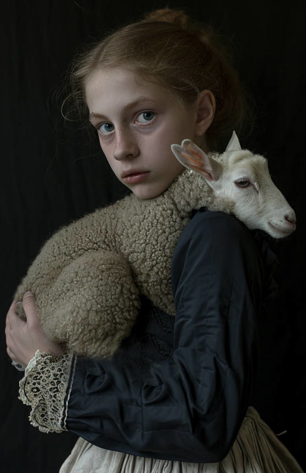
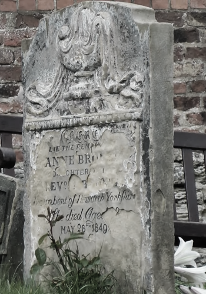
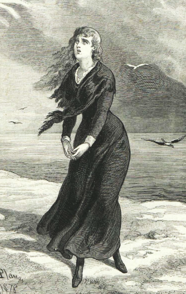
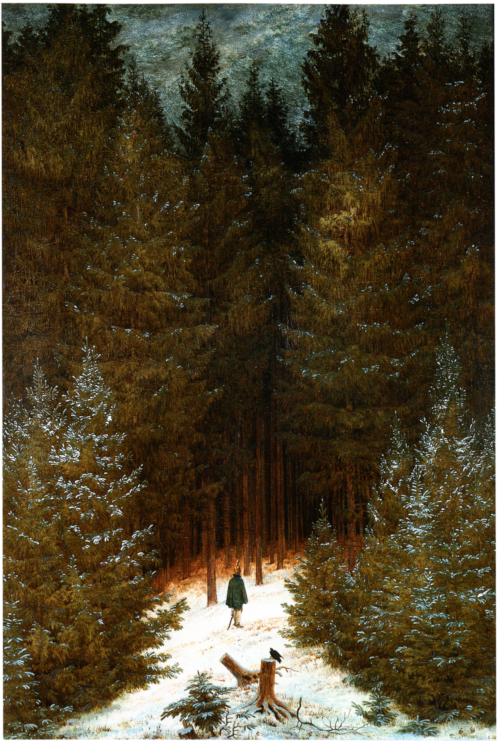
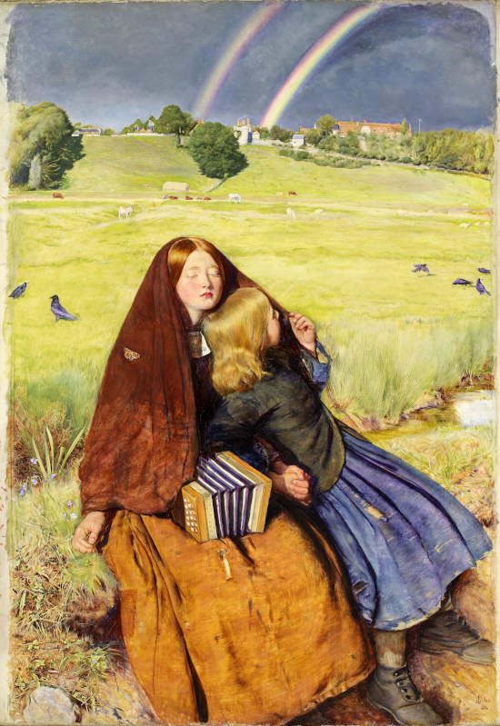
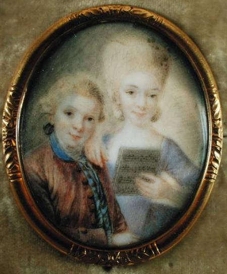
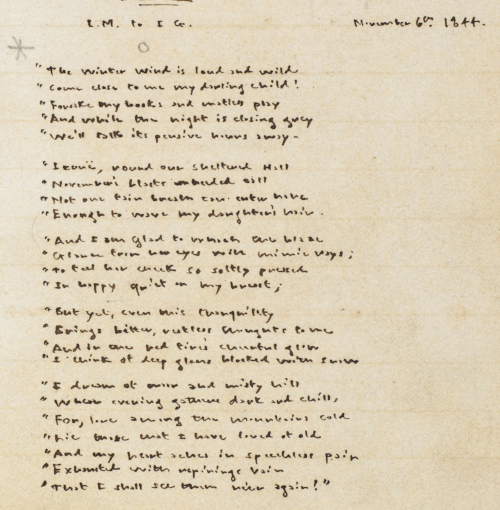
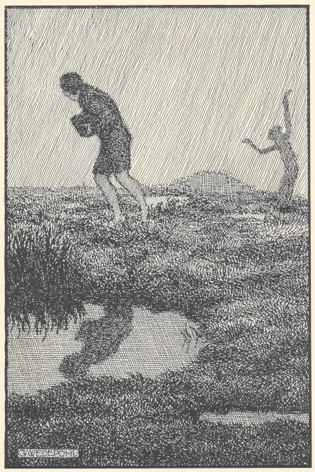

About the Dark Muse; Inaugural Essay
 The Great Inland Sea: most conductive of the Dark Muse
The Great Inland Sea: most conductive of the Dark Muse
January through September, 2024
To begin
(Note: I began writing this in the Winter of 2024 and it is now the Michaelmas weekend; and so my external references might shift as we go…)
Light snow drifts gently down from the low clouds draped over a misty boreal forest. Deer in their grey winter coats process along invisible lines through the fir and spruce. Ravens and crows dolefully croak and caw back and forth. Such an ambience to convey my thoughts, my impressions and feelings about my dark proclivities, my Dark Muse.1 muse: Originally any of the nine sister goddesses in Greek mythology presiding over music, literature, and arts; or a state of deep thought or abstraction, e.g., to enter a muse over a poem; or a source of inspiration, e.g., Jane Austen is my muse.
Do you find it difficult to describe your fascination with things on
the gloomy side? You often find dreamy what others find dreary
… as when an overcast day brings on a strangely sanguine melancholy
… or a stormy night is magnificent in a frightening and thrilling
sort of way? Twilight is a welcome reprieve from the hectic, incessant
day, freeing your senses, calming, deepening your thoughts. You’ve
paused to gaze transfixed upon a lonely, nondescript landscape, a
wild, deserted shore, an old, abandoned cemetery. As when a decaying,
overgrown, other-century structure makes you envious of the bats
living there. Unnatural is having to get out of heat into air
conditioning and suffer through smalltalk while drinking iced
beverages; truer it seems to come inside out of the cold and sit by a
fire in a deep, shared silence drinking hot tea. Time and again what
they find “uplifting” is piteously trite out to ruefully disappointing
for you. Panic and nausea well up when somebody is flogging
sunny-cheery. It is then being alone is a relief, not at all
lonely. They seem to bounce from spectacular to spectacular; while
things subtle, veiled, shadowy tenuous, understated are your
druthers. Their heroes grasp desperately for cheeriness and must have
happy endings. Yours learn and grow by facing the grim and harsh—and
if that means succumbing to the thrashing, amen, requiescat in pace,
RIP, c’est la vie, time for mourning black.2
…e.g., Lady Dedlock’s death at the graveyard of her secret
lover in Dickens’ Bleak House.
And so candlelight
over artificial light, linen over nylon, old architecture over new,
the genial disorder of wild nature over the forced containment of
gardens. If in a city, you can’t stand anywhere but the oldest
quarter, oldest park, oldest cemetery. And yes, it might seem a bit to
ask, but wouldn’t it be grand if every month we celebrated
Halloween?… If yes to any or (hopefully) all of this, you might
understand what I’m trying to say here.
 Transfixed by an abandoned graveyard: octonimoes@DeviantArt
Transfixed by an abandoned graveyard: octonimoes@DeviantArt
Natural Dark, Brontëan style
I provide here a quote from Charlotte Brontë’s Jane Eyre: An Autobiography. Main protagonist Jane describes the house of her adoptive family, the Rivers, called simply Moor House, and the environs on the edge of the wild Yorkshire moors during the reign of George III3 The word moor appears forty-three times in Jane Eyre. After the second or third use, I was just putty in Charlotte’s hands…
They loved their sequestered home. I, too, in the grey, small, antique structure, with its low roof, its latticed casements, its mouldering walls, its avenue of aged firs—all grown aslant under the stress of mountain winds; its garden, dark with yew and holly—and where no flowers but of the hardiest species would bloom—found a charm both potent and permanent. They clung to the purple moors behind and around their dwelling—to the hollow vale into which the pebbly bridle-path leading from their gate descended, and which wound between fern-banks first, and then amongst a few of the wildest little pasture-fields that ever bordered a wilderness of heath, or gave sustenance to a flock of grey moorland sheep, with their little mossy-faced lambs—they clung to this scene, I say, with a perfect enthusiasm of attachment. I could comprehend the feeling, and share both its strength and truth. I saw the fascination of the locality. I felt the consecration of its loneliness: my eye feasted on the outline of swell and sweep—on the wild colouring communicated to ridge and dell by moss, by heath-bell, by flower-sprinkled turf, by brilliant bracken, and mellow granite crag. These details were just to me what they were to them—so many pure and sweet sources of pleasure. The strong blast and the soft breeze; the rough and the halcyon day; the hours of sunrise and sunset; the moonlight and the clouded night, developed for me, in these regions, the same attraction as for them—wound round my faculties the same spell that entranced theirs.
… the consecration of its loneliness indeed. I often read this passage just to muse upon the wistful, moody, delicately melancholic, intentionally anti-spectacular subtleties she describes—and how this and other choice moments set the whole tone and mood of the book. Charlotte Brontë establishes light and dark as equals, then works expertly with the gradient there between. The dim, the shadows, the dark, the harsh, even at times merciless inclemencies are features not bugs. She does not suppress dark, perhaps knowing that if it were seen an equal to light it would eventually prove itself the older, wiser sibling, capable of rich, complimentary contributions.
One notable gradient boon is how she has the Moor House environs so very abandoned, lonely, hence, ultra-wild exactly because they are so unpresuming and overlooked, so bereft of anything nature-spectacular … as opposed to some breathtaking, necessarily primordial wilderness millions of miles away, visited only by the most intrepid explorers.4 …or by modern, well-off tourists. Indeed, subtle and unassuming become the older, wiser siblings of grand and spectacular. Notable too how Jane arrived at Moor House—on her hands and knees half dead from hunger and exposure, thus, adding complete and ultimately necessary vulnerability to this sublime mix. It is exactly this vulnerability that qualifies her as a real part of the scene. And once recovered, she is still every bit the underdog—relative to us today in our modern nature-dominating high-tech, hyper-materialist world where we are nothing but astronauts on our own planet. This point is key to what I’ll say later…
Nature staged…
The second half of my childhood was spent in Tennessee,5 …the first half in Southern Illinois. and my favourite place was the Great Smoky Mountains National Park high on the ancient Appalachian Mountains border of Tennessee and North Carolina. The Smokies are a federally protected, quasi-pristine wilderness of 522,419 acres, surrounded by lesser-protected though still technically wilderness USDA National Forest lands, adding another million or so acres. Statistics say the GSMNP itself is the most-visited of all U.S. national parks with nearly fourteen million tourists per year,6 …more than double the next most popular, the Grand Canyon… with additional tourist attractions and accommodations all around the park boundaries. And what are these visitors doing? Nothing like early-nineteenth-century Jane on her moor. Only a tiny fraction are actually out on the park’s extensive wilderness trails hiking and camping. Most are either driving up and down the main dissecting highway connecting Tennessee to North Carolina or simply crowding into the visitor centres, again, via our modern spaceship-like automobiles. Many years ago I visited on a Fourth of July, stopping in the main tourist town bordering the park, Gatlinburg, Tennessee, where the sidewalks were practically standing-room-only. But later that same day I hiked for hours deep in the park on the main Appalachian Trail and saw not another human… Strange as this may sound, I say Jane’s Yorkshire moorlands are real nature, while the Smokies are something else, simply because of the sheer abstraction, the artificiality of their purpose, not to mention their being so recognised, their well-known-ness throughout the entire world.
To be sure, the Smokies are fussed and ruled over by legions of scientists and bureaucrats at the behest of the U.S. Department of Interior’s National Park Service, UNESCO’s World Heritage Convention, the International Biosphere Programme, etc., like some great research terrarium under an invisible glass dome. Even in the remotest, genuinely wild spots many miles from any human disturbance, the weight of humanity’s lurking dominance, our collective mental presence is inescapably massive… And so we have the dichotomy of discovered versus undiscovered, exotic versus vernacular, integrated versus detached, grounded versus abstract, thousands versus no matches to googling. As the Rivers’ guest, Jane Eyre described a natural and organic connection to her moorland. And yet no modern tourist can ever expect to become truly integrated with the GSMNP complex as Jane was with her moorlands.7 Perhaps give the Smokies a second chance by reading the pre-park fictional work Christy by Catherine Marshall. She captures something that might be called Appalachian Gothic. Lots more on what nature really means to us later…
My Dark penchant
Continuing, I am at a loss to explain my dark penchant to those who do not, cannot, will not get it. To be darkly inclined as I mean it is a take-it-or-leave-it proposition; either one gets Dark or one does not.8 Allow me the poetic emphasis device of capitalising nouns. Dark as I mean it was best presented and developed by certain poets of the early-nineteenth century Romantic Era,9 Quick preliminary, much more later: The term Romanticism followed a twisted path beginning with the Latin romant, or, “in the Roman manner”, thus, not at all our current use of the word as a synonym of lovey-dovey stuff. In general, bundling what I’m trying to get at as Romanticism is fraught to say the least. Academe wants to grip butterflies, but when they open their hands there is only goo. Lots more on this problem as we go… an emergent property, and a very special private corner of this ultimately maligned and misunderstood time. I also believe the Dark Muse is best expressed in poetry, but hardly ever as well in prose. I, as well as many others of yore, believe that lyrical poetry captures far more and drives far deeper than whatever can be lined up in book-length chains of prose sentences. For example, it is almost as if the poetess Emily Dickinson used words so very cryptically to expose just how tenuous words really are. She routinely made strings of words give up their ghosts just to swap in even more mysterious ghosts—again, something really only doable with poetry. We’ll explore some of her amazing flights into thoughts behind thoughts put to words as we go.
To be sure, my Dark Muse often comes on as a feeling behind a feeling, subtle, maybe even profound, and yet fleeting, not availing itself to logic-bound analysis or description or intentionality.10 Yes, ironic that I’m trying to be logical analytical here, no? One very important principal, the German poet Novalis, penname for Baron Friedrich von Hardenberg, often used a unique fragment writing style when describing his Dark Muse. And so he abandoned even lyrical poetry to get yet again more bursty, more spontaneous in order to capture the subtleties of his dark impressions. Lots more about Novalis, the presumed founder of German Romanticism, as we proceed. Dark stirrings arrive mostly unannounced, a veritable surprise. Dark is a gift. Thus, my exploration of Dark will rely heavily on the poetry of the preeminent Romantic Era champions of the Dark Muse.
Adding an extra wagon to the modern goth train
Of course I have an affinity with and feel a kinship to the
multifaceted modern goth subculture.11
…goth described here by Wikipedia as well as anywhere.

And yet goth is one of the
elephants I feel I must shift a few inches from the centre of the
room. In very short, modern goths surely sense Dark,12
By the way, the Germans capitalise nouns, i.e., built-in
poetic emphasis.
but, for
whatever reasons, so many of them only see fit to express it, explore
it very narrowly through goth music and fashion. My Dark Muse would
hopefully include, be akin to what is today called goth and gothic,
but I will try to go deeper and be more elemental. If you are goth I
hope you allow me to speak to your “inner goth.”
I believe there is a natural darkness provided initially by Nature, a basis upon which we may create symbols, artefacts, icons, trappings to emulate, decorate, magnify, socialise, humanise, if nothing else, bring indoors this natural Dark. Yes to goth aesthetics, as far as they may resonate, do honour to Dark. But too often our human take on Dark unfortunately winds up overstated, overwrought—all the way out to grimy, ignoble, silly, scummy, stupid.13 …and then the normies haul out their DSM-5s (Diagnostic and Statistical Manual of Mental Disorders) and pigeonhole us as abnormal. We imbibe, then express what we see, experience, feel; but I say this process must be done carefully, if not respectfully. And so I have to respectfully downgrade, reorder so many of the gothic horror fright memes, e.g., vampires, witches, demons; mean, nasty, menacing this, threatening, evil that. Right up front: My Dark is not meant to shock or frighten, rather, invite, deepen, and enrich. My Dark Muse contains nothing cruel nor evil nor sinister nor satanic. As philosopher and psychologist John Vervaeke said in describing the modern crisis of anxiety and dysphoria, “Horror is the aesthetic of when you feel like you’re losing your grip on reality.” All right, I might dip my toe in the lake of horror, as Alfred Hitchcock once said, but I needn’t dwell there too long. I do not want shock and terror to become the default setting. And so mine is not the Star Wars “dark side,” not dark barbarism à la Heart of Darkness, and not the psychic dark described by Freud or Jung. I cringe when someone says, “…and then things took a dark turn.” Find a different adjective, please! In general, let’s drop the whole scary dark thing. Let’s have a new formula:
\begin{align*} \large{\text{Dark} \ne \text{negative}} \end{align*}
Yes, all right, once in a great while campy, over-the-top gothic can
be interesting, fun; but I’d rather not lose sight of the source,
however obscure and rare it may be.14
Yes, MHGA: Make Halloween Great Again

I’m after something more
subtle, discriminating, inward-personal … perhaps like the small
natural sweet of a wild strawberry or raspberry versus the chemical
sweet blast of saccharine.15
More about Jean Baudrillard and his theories of simulacra and
hyperreality later. But for now, yes, Dark too often suffers from
hyper-Dark treatments.
Right. Nature over the synthetic,
the industrial. Basically, my Dark is about the sublime, indeed,
sublimity. And yes, I will eventually deal with Edmund Burke’s (as
well as Bertrand Russell’s) false, “they don’t get it at all” tedium
on sublimity later. In the meantime, sublime is really just what
we may find beyond mere beauty, touching what Dostoevsky is saying
here
There are seconds, they only come five or six at a time, and you suddenly feel the presence of eternal harmony (POEH) fully achieved. It is nothing earthly; not that it is heavenly, but man cannot endure it in his earthly state. One must change physically or die. The feeling is clear and indisputable. As if you suddenly sense the whole of nature and suddenly say: yes, this is true. This is not tenderheartedness, but simply joy.
Awe ahead of joy? Again, much more fleshing out as we go along…
Allow me to hearken back to a golden era when Dark was the cultural currency, i.e., roughly the first part of the nineteenth century, a time when my key poets, my principals — Poe, Novalis, the Brontës — showed us how triste and Stygian can be so very subtle and sublime. And most important to modern goths, I’m after something I will not outgrow, rather, continue as my raison d’être sustaining me to my grave. I say there must be no “aging out of the scene” as I fear often happens with modern goth. Rather, the Dark Muse should be a deepening and widening and transcendence for one’s entire life.
 Female Strigoi by HalloweenJack1960@DeviantArt
Female Strigoi by HalloweenJack1960@DeviantArt
Dark like me?
Life would be empty, insipid, weak tea for me, every moment rudderless, misspent, crushingly mundane were there not a strong and constant current of the Dark Muse. It is as if nothing can be properly understood without the dark perspective. But then I wonder, is this nature or nurture? That is to say, am I innately Dark, or is this something to which I’ve been acculturated?16 … for example, due to the Victorian shadow thrown over my childhood especially by my grandmother? I feel it is the former. One simply has dark inclinations, one either feels the tug of Dark—regardless of any sort of prepping or grooming—or one does not.
Let’s try a poetry litmus test. I present here a short, simple poem
from my main darkness benefactress, the poetess who stands at the
centre of everything I mean to say about Dark, the woman who rules me
from her grave, Emily Jane Brontë17
Look here for a quick biography.

Fall, leaves, fall; die, flowers, away;
Lengthen night and shorten day;
Every leaf speaks bliss to me
Fluttering from the autumn tree.
I shall smile when wreaths of snow
Blossom where the rose should grow;
I shall sing when night’s decay
Ushers in a drearier day.
Here Emily of Haworth, West Yorkshire, is direct, blunt even. She either speaks to something deep internal, or you are part of the majority who will find it—weird, abnormal, morbid, overwrought, puerile, even sick or evil. In my own life talking about my dark penchant has gotten mostly deer-in-headlights responses, if not outright hostility. The openly peeved see my dark druthers as morose, as wallowing in self-pity, attention seeking, dwelling on the negative. I beg to differ. I say I’m not skewed to anything particularly negative, morose, and certainly not morbid; rather, I simply reject modern 24/7 cheeriness. Negative is a part of real life, and this often hysteric spastic attempt to restrict life to sunny-cheery happy-clappy is the real sickness in today’s world. Alas for all the “mental health professionals” who think they can “train your brain to think positively.”18 The appallingly high percentages of people these days on prescription psychopharmacology drugs or pyscho-pharma, “happy pills,” is proof of what I’m saying. Happy and sad cannot, should not be controlled chemically.
Here is something a bit more relenting, but the same basic idea from
Christina Rossetti 19
See here for a bio. She is considered by many Britain’s
most prolific poet.

Fade tender lily,
Fade O crimson rose,
Fade every flower
Sweetest flower that blows.
Go chilly Autumn,
Come O Winter cold;
Let the green things die away
Into common mould.
Birth follows hard on death,
Life on withering:
Hasten, we shall come the sooner
Back to pleasant Spring.
Rossetti is expressing the Dark Muse fatalistically, though she ends with hope bound in humble expectancy. I like to think these two English poetesses are expressing an informed, matured melancholy that bespeaks a deeper understanding of life—all deriving from a deep grasp of, homage to Dark.
And another poem, here Longfellow’s Snow-flakes from a collection first published in 1863
Out of the bosom of the Air,
Out of the cloud-folds of her garments shaken,
Over the woodlands brown and bare,
Over the harvest-fields forsaken,
Silent, and soft, and slow
Descends the snow.
Even as our cloudy fancies take
Suddenly shape in some divine expression,
Even as the troubled heart doth make
In the white countenance confession,
The troubled sky reveals
The grief it feels.
This is the poem of the air,
Slowly in silent syllables recorded;
This is the secret of despair,
Long in its cloudy bosom hoarded,
Now whispered and revealed
To wood and field.
Here I see Longfellow20 Go here for a quick biography. HWL was not typically Dark, rather, a popular, “uplifting” poet with a big audience. That’s what makes this selection so unique for me. looking to the natural world and poetising, to be sure, darkly. The idea of poetising, the poetisation of nature and life was central to the Romantic Movement.21 Below, we will go over Romanticism poetising’s originator, Novalis. Much to say about poetising, Novalis, and Romanticism… This would be the poetry parallel to the long-standing belief that we humans explain ourselves through, embed our lives in narratives.22 …more about storytelling below… And so despair, grief, misery are transformed into more equanimous states of sadness and melancholy, hopefully bringing us to a higher emotional maturity. In some paradoxical way, nature and darkness eventually become healers … as if the initial agony and sorrow of life’s cruel blows are like a ravaging cancer or virus. Which may eventually fade into remission. Which we can never entirely conquer, eliminate whilst on Earth. Hence, some strange symbiosis must be struck… As I will explain, being mortal was an entirely different experience back then, back when very few thrived, rather, mostly only survived.23 A side question may be, Why in such bounteous, prosperous, easy times as our today are so many people not thriving, rather, only barely surviving—mainly due to psychological infirmaries? More on the false gospel of thrive, thrive, thrive! later…
This poetising of Nature dark and mystical, this patient, reverent knocking on Nature’s door closed to us since the Fall from the Garden of Eden, was the modus operandi of my select nineteenth-century poets. Rather than avoid, they sought out, embraced their Dark Muse, something we today in our brightly-lit, cordoned-off world usually think of as bad, counter-productive, even dangerous. I contend we have lost this subtle art of moving hardship, tragedy, emotional crises into a stasis remission melancholy. Today, we vilify and wage full-scale war against any and all recurring melancholia with psychoanalysis and prescription psychopharmacology drugs. Instead of hysterically rushing in to counter “negative” thoughts with “positive” thoughts, better to find a higher perspective on the inevitability of the negative in life, no? Really though, there is an unnaturalness to chivvying a person into suppressing sad thoughts, to bombing the brain with synthetic biochemistry. There is a desperate, embarrassing, intelligence-insulting triteness to “cheerful at all costs.” Indeed, cheeriness as a gateway drug… And so all too often we are failures at finding a modus vivendi24 modus vivendi: An arrangement or agreement allowing conflicting parties to coexist peacefully, either indefinitely or until a final settlement is reached, or (literally) a way of living. vis-à-vis the trials and tribulations of life as our ancestors once did. Fazit25 Fazit: n; in conclusion, in summary, all in all; Germanized Latin for it follows. : When the negative is suppressed, we become exposed to a myriad of psychic maladies. Better I say to find some dignity through Dark aesthetics. Which, again, is exactly what our ancestors did. Another Fazit: There is meaning in pain—and even deeper meaning in more pain. They knew this back in the day. So spoiled on the illusions and expectations of easy modern life, we’ve lost sight of this fact.
To suffer…
Let’s hear from another of my principals, Emily Elizabeth
Dickinson26
See here for a quick biography.
After great pain, a formal feeling comes —
The Nerves sit ceremonious, like Tombs —
The stiff Heart questions ‘was it He, that bore,’
And ‘Yesterday, or Centuries before’?
The Feet, mechanical, go round —
A Wooden way
Of Ground, or Air, or Ought —
Regardless grown,
A Quartz contentment, like a stone —
This is the Hour of Lead —
Remembered, if outlived,
As Freezing persons, recollect the Snow —
First — Chill — then Stupor — then the letting go —
In her day, life was a struggle—with entropy, adversity, depression, with Death ready to lap over the gunwales of a person’s little lifeboat at any time. Emily Dickinson of mid-1800s Amherst, Massachusetts, relates human suffering in a severe and fatalistic yet grounded way by pulling me into a dark place where I am suddenly thrown into reliance on alternative, finer, higher sensibilities. Again, all we may ever do in our lives is disperse, reorder the initially searing, inescapable pain of travesty to a dull, hopefully diluted ache in the ever-growing backdrop of time. We never “win” the race, but perhaps we do get recognition for participating—first and foremost from ourselves, then from the network of fellow humans around us.27 Where has our human network gone? Something tells me getting pity responses to a YouTube comment isn’t the same…
As Emily of Amherst said in a letter …but to all except anguish the mind soon adjusts. Again I must say the subject of pain, suffering, and loss was far better conducted in the past than they are today. How, why? Because first and foremost they did not attempt to contain, disguise, systematise, drug, or process greif; rather, greif was faced directly, pain was shared, empathy a way of interconnecting in a healthy communal life. And so emotional space was allotted, support was natural, organic, openly shared. Strikingly different from today was their acceptance of doom28 Doom as unforeseen consequences of previous actions, which in turn, entropically snowball into indebtedness, tragedy, and ruin; typically multi-generational, a punishment that never seems to fit the original crime—if it was a crime at all. One German word for doom is Untergang, which also means downfall. and fate, two concepts antithetical to our dynamic, positivist, self-determining, fix and paper over everything quickly modern ways. This, in turn, led most to faith in God and acceptance of His will.
The soul must go by Death alone, so, it must by life, if it is a soul.
—Emily Dickinson
…alluding to The soul as an entity of both life and
death. Indeed. Especially death was handled so very differently back
then. Consider Queen Victoria29
Queen Victoria in mourning black ca. 1862.

who wore mourning black from the
time of her husband Prince Albert’s death in 1861 until the end of her
life in 1901. Likewise, Amélie of Leuchtenberg who upon losing her
husband Pedro I of Brazil in 1834, wore mourning black until her death
in 1873. In those days death was properly, officially mourned. No one
tried to hustle mourners along with their grief and sadness. Contrast
this with today’s all-too-prevalent disassociation, the confused
emotional shutdown, the disorganised quasi-denial and suppression we
moderns too often show towards death30
Is there anything worse than the so-called five stages of
grief or the Kübler-Ross model? Grief as an emotional malfunction
to be systematically reduced, fixed, corrected? Alas.
. For the early nineteenth
century, poetising life’s train of tragedy was depression
deconstruction as a life skill. The slings and arrows of human
existence found conjunction with Nature, Dark, and Faith through
poetry, thereby highlighting, elevating, ennobling our uniquely
human experience on Earth, thereby casting a gossamer of sublimity
over our natural existence like no other generation before or
since. Theirs was the deepest soundings of our humanness that I know,
and, thus, something I must pursue and showcase here.
But again, why Dark?
Still, why Dark? Because Dark speaks to me. How? Why? Lack of a clear and simple answer forces me into a regrettably wordier one. I might say Dark remains mysterious—no matter how many different angles from which I try to express it. Dark is something instinctual, cathartic, evocative, centring for me. Dark is more than the lack of light. Dark can lead the imagination to riot. The moss, lichens, and mushrooms in the secretive shadows of the forest incite so much more than the spectacular sunny vista across the forest valley. Really though, I’m just not into spectacular…
The fresh-cut rose elicits a simple response, but the faded rose another—deeper, sobering, but never “depressing,” at least not for me. Here is something from my novel Emily of Wolkeld 31 Not out yet. Coming…
The new cut rose: initially beautiful, thereafter dried and desiccated, lost forever its initial delicate beauty and fragrance. Once affording a glimpse of perfection, only reminiscent thereafter. Beauty always some fleeting illusion or madness? Moreover its eclipse, joining, leading the shadows of our relentless doom, our march to the grave. And though I live in this momentary brilliance, I still search my night shore; for until now I have known only of beauty’s haunting rumour, of love’s promise, those slightest quickenings of things necessarily rare and formerly peripheral. Yes, in this moment I may have some of love’s bliss, of roses’ beauty, but I know I shall cherish with a larger, more settled heart the memories thereof, echoes sent down life’s long, clouded memory hall as true and lasting blessings.
Yes, I might have received a nod of approval back in the day, perhaps a pat on the back…
Let’s see another example of Dark get-it-or-don’t, this time another poem from Emily Dickinson, her There’s a certain slant of light32 In the third line, Heft means weight, heaviness; importance, influence; or (archaic) the greater part or bulk of something.
There’s a certain Slant of light,
Winter Afternoons —
That oppresses, like the Heft
Of Cathedral Tunes —
Heavenly Hurt, it gives us —
We can find no scar,
But internal difference —
Where the Meanings, are —
None may teach it – Any —
’Tis the seal Despair —
An imperial affliction
Sent us of the Air —
When it comes, the Landscape listens —
Shadows — hold their breath —
When it goes, ’tis like the Distance
On the look of Death —
Let that sink in for a while… The last line includes Death capitalised.33 Dickinson freely employed the capitalising of nouns for poetic emphasis. Again, I must emphasise how these nineteenth-century artists approached human mortality so differently than we do today. As I’m saying, this past-century view of Death has largely gone lost. I hope to rediscover it. I’ll start by positing their understanding of Death was integral to their understanding of Nature…
Pre-modern Nature and Death
Travel why to Nature, when she dwells with us? Those who lift their hats shall see her, as devout do God.
—Emily Dickinson
Here are the main points towards a new and much truer understanding of Nature:
- True nature is the myriad cycles of birth, growth, deterioration, and death happening constantly everywhere, full stop, nothing else…
- …ergo, nature is not a place, no indoors versus outdoors, no here versus there, rather, a state of being, life and death, existence itself…
- …ergo, no increase or degression of nature, rather, nature constant ubiquitous…
- …ergo, deterioration and death are integral parts of true Nature.
- …and so our increasingly extra-natural, pseudo-immortal modern human flies in the face of, is becoming evermore estranged from true Nature.
- …and finally, many Romantic Era poets tapped into real Nature—in contrast to our modern aloof, triumphalist grandiosities, which amount to a complete estrangement from nature as separate and locational, thus, “held outside” and rendered optional.
Real nature is not optional, it just is—ubiquitous, unrelenting. I hold that our modern, twenty-first-century understanding of nature is very different than Nature of early-nineteenth-century poets such as William and Dorothy Wordsworth, or John Clare, or the Haworth and Amherst Emilies.34 Again, my shorthand for Emily Brontë and Emily Dickinson is based on their earthly locations—Haworth, West Yorkshire, for the former and Amherst, Massachusetts, for the latter. I contend my principals had a unique grasp of how nature was the ongoing struggle between, the entropic balance of birth and growth versus deterioration and death. No other creed, philosophy, religion the world over sensed and comprehended this cosmic truth better.35 Pointedly absent from any sort of modernist poetry is this underlying sense of true Nature. Of course many celebrated poets of the late-19th, 20th, and 21st century have waxed deep-impressionistic, painting lovely impressionistic canvases, but they, alas, just don’t get it…
For just one example, our modern indoor living environments are more like modular, sealed space stations plopped down on an alien planet compared to the simpler, more primitive structures of the not-so-distant past… Quite literally, the Brontës’ Haworth parsonage, built in 1778 out of local stone and wood and clay, had more in common with human shelters from one, two thousand years previous than with our modern suburban homes only some two hundred years later.
 Tadao Ando Museum art by Celestin0@DeviantArt
Tadao Ando Museum art by Celestin0@DeviantArt
Hence, in just the past two to three hundred years a very steep, vertical gradient or differential has grown between so-called indoors and outdoors. This, in turn, has brought us to see nature more as a place separate and outside, cut off, away from our artificial, sterile, high-tech, controlled and regulated modern indoor spaces36 Is it not ironic how nearly all lifeforms that attempt to share our modern human environments uninvited are considered invasive, noxious vermin, pests to which we have developed almost hysterical revulsion? … which, in turn, has lead us to rate nature outdoors on continua of relative wildness and remoteness from our sealed-off, self-contained, humans-only environments. And so I ask, Who is the person in the image above walking down that hall?
 Homespun and one of its sources. Original art from Steve-Lease (DeviantArt.com)
Even as late as my own childhood the term homespun was in use to indicate a poor, unsophisticated person, a country bumkin, a hick from the sticks. The term referred to the inferiority of a person’s clothing being homemade from locally-sourced, hand-spun and woven materials such as linen and wool rather than factory-made retail clothing. The early-nineteenth century Brontëan West Yorkshire would have seen the majority of the villagers in homespun, all but a few garments not hand-tailored bespoke.37 Though cotton was rapidly becoming a global commodity, both cotton and wool fabrics eventually being produced in steam-powered factories as the Industrial Age reached its inflexion point of growth. And of course food was entirely from local production. Hence, a person’s daily resources were overwhelmingly local, a small bit perhaps coming from a nearby market town, while only the most exotic items (e.g., a clock, a fine musical instrument) would have come from farther away. Today, however, this supply pyramid is completely flipped, as nearly everything comes from far (far!) away (e.g. China), while only a few personal items would be from a local or even regional source.38 In any modern (non-organic Amazon Whole Foods-style) chain supermarket I’m sure less that 1% of the food items come from a truly local source. Nearly everything is shipped in from often far afar. And so in Brontëan times (first half of the 1800s) much of the surrounding lands were agriculturally domesticated, a working partner, so to say. Contrast this with today’s urban-suburban populations hardly ever in contact with farmers or their farms. Nor do we know anything about where our clothing comes from. Today, “the land” as our immediate provider has been completely abstracted into concepts such as ecosystem and biosphere, which imply we are now removed scientific observers controlling nature as if it were just another of our mechanical objects.
No doubt we have always made a distinction between being inside a shelter and going outside into the so-called elements. But starting some six to ten thousand years ago we began to give up aboriginal nomadic life and its direct daily contact with said untamed, uncontrolled elements in order to establish permanent city-states supported by mass monoculture agriculture. And so indoor environments in ever-expanding urban centres became increasingly physically removed, walled off from the wild natural world, becoming evermore self-contained, all-encompassing, self-referencing, thus, recursively derivative.39 …e.g., what is a flower garden but a derivative, a mock-up of an original place out in the wilds, albeit with the pretty bits super-amplified idealised, the not-so-pleasant bits left, weeded out? Again, this is Baudrillard’s hyperreality, which we’ll discuss below.
Along with this growing separation came mentalities, narratives, collective social-psychological “mindspaces” increasingly urban-based, thus, uniquely extra-natural.40 How often is a Shakespeare character out communing with nature? Never?… Being so completely indoors meant we no longer were in direct contact with the aboriginal animist nature spirits all around; instead, praying to an extra-natural, off-world monotheistic God in architecturally showcase churches.41 Churches were typically built in the centre of a town or city on the highest ground. I once heard that to this day no building in Vienna may be built taller than the tower of St. Stephen’s Cathedral. Western architecture seemed to reach a fantastical aesthetic crescendo in the Victorian nineteenth century, ironically with dark, dense, dramatic Neo-Gothic as one of the a leading styles. Indeed, seemingly all nineteenth century styles were some manner of nostalgic revivalist (Greek, Gothic, Italianate, Elizabethan, Queen Anne, etc.), perhaps hearkening back to times more integrated with nature, i.e., shallower gradients between indoors and outdoors. This coincided with the exponential growth in urban population having just passed an inflection point. And so today we see the steepness of our indoor-outdoor gradient has accelerated even more, resulting in a humanity more extra-natural than ever, billions of people in an all but permanently abstract social-psychological spaces. How then may we, a species seemingly capable of great adaptability, measure with any objectivity our separation from nature? But then what exactly is human adaptability? I posit there are two sorts of adaptability
- Permanent thus beneficial alteration, or
- temporary adjustment, i.e., an allowance for less-that-optimal conditions, supposing an eventual return to optimal conditions.
We humans, I contend, are the second type of adaptable. And this means
we are not truly adaptable at all, rather, only capable of making
temporary adjustments to bad conditions. Thus, we are certainly no
barometer species or “canary in the coal mine” of our own
well-being. In fact, we routinely ignore our fellow canary-like
humans, allowing them to suffer and die, their non-adaptations
unheeded if not condemned as weakness. What has domestic, urban,
indoor living done to our brains, our sense of belonging to the
planet, to one another?42
Skyline of Orbit City from The Jetsons cartoon sitcom
ca. 1962
How can we even begin to trace back up
the many rabbit hole bifurcations, the chain of derivatives we’ve
taken for all these centuries down and out and away from direct
interaction and response to Natur pur?
To be sure, we have demonstrated an amazing collective will to make conditions better for ourselves and for us alone. We’ve set up the entire planet to be a department store strictly for us, then we’ve looted and ransacked our own department store! We even accept our dominion over, abstraction away, separation from nature as fate, as a sort of exceptionalist, triumphalist destiny. After all, our population doubling in less than fifty years to eight billion43 Human population grew 60% between 1800 and 1900, and 275% between 1900 and 2000. says something to our intention, our ability to dominate. And we have thrown every effort towards, have adapted our collective human psyche, our narratives to this separation.44 Modern human narratives come at us as thousands upon thousands of fictional novels, films, plays, while aboriginal peoples had myth and legends timeless and unchanging. That alone… But is this sustainable? All doomsday spinnings aside, many of us today have grown concerned over the question of sustainability, concerned about our long arc of estrangement from nature.45 Is our relatively gradual separation from nature not a perfect example of the boiling frog metaphor? Let me repeat from above a completely different understanding of nature, namely
Nature is not a place inside or outside of our human spaces, rather, nature is everything going on everywhere. Nature is the myriad cycles of birth, growth, deterioration, and death happening everywhere all the time.
I contend the Brontës, as well as other Romantic Era poets, knew, or at least sensed this pre-modern meaning of Nature as above and beyond inside or outside. Yes, one went outside, out into the “elements.” But once back indoors, a Brontë sister was not so completely out of and above nature’s touch, influence, doom (i.e., the deterioration and death part) as we now fancy ourselves. Again, the cycles of birth, growth, deterioration, and especially death were happening everywhere sans emplacement.
Consider how the Industrial Revolution created urban production landscapes vast and barren, vast, seemingly endless landscapes so completely alien and devoid of any sort of nature, spatial or otherwise—indeed, William Blake’s “satanic mills.” Here is what German philosopher Ludwig Klages of the late-1800s said
The face of the land has become a landscape of coerced “Chicago-ifications” as humanity has fallen into an orgy of destruction without precedence. So-called civilization wears the face of an unleashed murderer, while the fullness, the bounty of the earth has withered from his poisonous breath.
And an equally hard-hitter from another German, Günter Grass
We already have the statistics for the future: the growth percentages of pollution, overpopulation, desertification. The future is already in place.
This was a change on a scale never before seen, a huge and relatively sudden step away from the physical world as the purveyance of nature. And even when the modern individual left the confines of an indoor space, he was still deep within a massive concentration of extra-natural, human-exclusive structure, logistics, and activity … which made peasant life—as hardscrabble as it might have been—in the pre-industrial rural landscape all but idyllic compared the grueling, grinding poverty of the soul-emptying industrial cityscapes.46 What became of Wordsworth’s To a Highland Girl shepherdess when she and her family were forced into an industrial urban slum? We can only hope she and her kin are in a better place now…
Here is an excerpt from Emily Brontë’s Shall earth no more inspire thee where Mother Nature speaks directly to the wayward human
…Thy mind is ever moving
In regions dark to thee;
Recall its useless roving—
Come back and dwell with me.
I can never read this poem without having a very emotional response. Indeed, the house of mirrors echo chamber that modern life has become blocks Nature and precludes any reality. And so the choice is simple: We can go back to Nature or continue our useless roving, which can only lead to evermore alienation—from real Nature, as well as from each other.
To be sure, so much ominous and doomsdayish has been said about our mass society in this modern industrialised world—all pointing to the increasingly obvious fact that our vaunted adaptation skills are being stretched to the breaking point, collective mental dysphoria increasing as a total ecological collapse approaches.
Here again Emily Brontë, her epic The night is darkening round me47 …which we will explore again below…
The night is darkening round me,
The wild winds coldly blow;
But a tyrant spell has bound me,
And I cannot, cannot go.
The giant trees are bending
Their bare boughs weighed with snow;
The storm is fast descending,
And yet I cannot go.
Clouds beyond clouds above me,
Wastes beyond wastes below;
But nothing drear can move me;
I will not, cannot go.
This the heart of my darkness. Yes, she is outdoors “facing the elements,” as we say. She even refers to the wilds as “wastes” and as “drear.”48 In those days wild, untouched places were often referred to as wastelands. And yet she is transfixed, frozen to the spot—and cannot, cannot go. Subjective terms like wastes and drear refer to the age-old attitudes towards nature as a terrible, grim, inescapable master, a sponsor of disaster and death, hardly over which to linger, let alone wax poetic. But surprisingly, my Romantic Era poets did just that, and to be sure, the grandeur and sublimity of Nature was the surprising result. Haworth Emily stopped, turned around, and stared directly at an enemy previously known as all-powerful and unforgiving, and in so doing she sensed something deep and personally transformative. She was stirred to write lines that, for me at least, are the very centre of the mystery of Life, Death, and the Dark Muse.
Let us now contrast Brontëan Nature with Ernest Hemingway’s twentieth-century take on nature. Hemingway and his contemporaries rambled hither and yon over the globe trying to find the ultimate nature experience. He attempted to dominate, to force his will upon nature to prove his power, his worthiness as a man. I contend this was at best some strange sacrificial ritual to nature,49 Where I live (the Arrowhead region of Northeast Minnesota) we have two major bike races of over one hundred miles through our wilderness. Is this some sacrificial, ceremonial ritual to nature? Indeed, much of our “outdoor activities” here involve hardship and discomfort in a sort of “rite of passage” way. at worst, just an act, theatre, creating drama. After all, if anything serious had happened to him he could have been airlifted out to receive modern medical care—and occasionally was the case.
Though not the Romantic Era poets, who lived their entire lives in harm’s way with no timeouts, no escape. Would Hemingway have done all those chest-pounding, macho-man things if there had been no modern world with modern medical aid just an airlift away? Haworth Emily lived in a time when nothing was modern; hence, even her circumscribed West Yorkshire moorlands were actually a semi-wilderness. Consider how early eighteenth-century medicine had no understanding of germs.50 What is generally acknowledged as a clear breakthrough was John Snow’s tracing of the London cholera outbreak of 1854 back to certain London neighborhood public wells. This was strong proof of the contagion theory. However, it wasn’t until the late nineteenth century that Robert Koch and Louis Pasteur established the field of bacteriology and our modern scientific understanding of microscopic pathogens finally developed. Quite literally, a cut on a toe could become infected, resulting in amputation, even death in those times. Nature for a Brontë sister was not a contest, a rite of passage, a show or game on a borrowed fresh-air stage. They weren’t out to prove anything to a modern audience.
Death beyond malfunction
With Nature as countless cycles of birth, growth, deterioration, and death going on all around us, the last two components, deterioration and death, must be understood beyond our mechanistic reductionist modern take of just physical malfunction.51 Couple this modern mechanistic “death as malfunction” with atheist nihilism to arrive at today’s soulless mechanical universe realism dumpster fire. We must consider Death capitalised.
Back in the day, Death was a force majeure—but no longer thanks to modern medicine. It’s almost as if deterioration and Death, two of nature’s supposedly inescapable realities, have been cordoned off—or at least placed under much greater human control than ever before. It’s as if through modern medicine we have begun to acquire a demi-godlike, proto-immortal veto power over physical demise. And with this control we have begun to tear down, dismantle a great component of spirituality, namely the reckoning of one’s mortality with a deity, with an afterlife. Where once was supposed a mortal, physical plane inferior to an immortal spiritual plane, we now would believe only the physical plane relevant, we, of course, its eventual total masters. But with this hubris comes a great psychic and spiritual impoverishment, the extent of which we do not fully realise. Allow me another Amherst Emily quote
Life is Death we’re lengthy at
Death the hinge to Life
For the meantime, however, death still remains an undeniable certainty. Death comes as it always has—from old age, fatal accident, or deadly physical aggression or predation.52 For critters, predators are other bigger critters. For humans, predators are—outside of war and homicidal aggression—all but exclusively bacteria and viruses. But a completely different attitude arises when modern healthcare’s labyrinth of diagnoses, drugs, procedures, surgeries, interventions routinely thwart what was once all but a certain, if not swift demise. We have seriously disrupted the schedule of Death, and so we’ve begun to lessen the mystery of Death, overturn fate, consequence, and doom. We’ve become lengthier at life, oiling and oiling Dickenson’s hinge…
The days of our years are threescore years and ten; and if by reason of strength they be fourscore years, yet is their strength labour and sorrow; for it is soon cut off, and we fly away.
— Psalm 90:10
This is surely the old-fashioned take on death and its finalistic, absolute inevitability so resounding as to constantly shake and echo back into life. Death as life’s backstop, container, timer, revelator,53 Gillian Welch nod. combinator, shaper, reaper.54 Consider this quite tolerable goth version of the classic rock song. Had this been written in Brontëan times, it would have been no cheap, sentimental gimmickry. And so I say, as Death is interrupted, so are the greater human cycles of emotion and spirituality interrupted … meaning if Death is also adjustable, as Emily Dickinson said it wasn’t, then we are slashing blindly at the very fabric of reality.
Indeed, what if we start to take over Death’s appointment book, rerouting, rescheduling Death’s comings and goings? Psalm 90:10 is making the point that by no means are we guaranteed seventy or eighty years of life, and even if we get them they might not be that great. And yet we have grown to expect from the implicit promises of modern medical science a healthy, high-quality seventy, eighty, ninety, or even more years. Again, modern medicine has disrupted the two last components of Nature ubiquitous cyclic, i.e., deterioration and death, thereby further collapsing our understanding of what true Nature is. Modern science has lessened, confused, disrupted the wallop of tragedy, weakened the overall doominess of doom by redefining life as just so much carbon-based machine circuitry, a mechanism that is to be better and better repaired, maintained, improved against entropic wear-and-tear—until we are literally immortal.55 Consider the now commonplace heart pacemaker, a device that literally overrides the human heart with artificial electronic pulses. Also, hip and knee replacements are now routine. And this, we are promised, is only the beginning. Some have called this transhumanism.
Allow me to relate a modern story touching on our new attitude towards Death. My father, who has since passed away, lost his third wife to lung cancer inevitably caused by decades of smoking.56 Ironically, both of his previous wives had likewise died from smoking-related illnesses. But instead of accepting this, he became angry and accused her doctors of malpractice, threatening lawsuits. Nothing came of this, but I wondered why such an irrational outburst from a college-educated man? I eventually theorised that from all the buzz surrounding the various possible medical interventions—including their probabilities of success or failure—he had begun to expect the death sentence of lung cancer could, should be beaten by some technology lurking in some corner of the modern medical mega-factory. Death was not the long-anticipated reunion with the Creator, rather, a trigger of enmity and recriminations over the failure of scientific procedures and medications. Alas…
Back in the day, no one would have second-guessed Death’s arrival to such an absurd degree. Again, human life was like a boat with shallow gunwales, the waves of Death expected to lap over at any time. But today the fourscore years spoken of in Psalms has become an implicitly guaranteed minimum. Old age and death are increasingly spoken of as “diseases” we can and should defeat. Death as a nuisance, indeed. My father felt cheated when that three-, fourscore and more was not forthcoming for his wife. But as you may anticipate, I contend life is truly life only with Death—Death absolute and not easily pushed back, much less manipulated or obviated.
A sickly Anne Brontë57
Anne Brontë’s grave in Scarborough

on her final dying trip to Scarborough in
1849 made a stop in York where she insisted on seeing the York
Minster. Upon gazing up at the great cathedral she said, “If finite
power can do this…” But then she was overcome with emotion and fell
silent. Dying Anne was in a deep and personal death mindset of utter
and complete humility and reverence.58
Perhaps watch this on Anne’s last days in Scarborough.
In my (unpublished) novel Emily of Wolkeld, the character Annette says yes to the question posed by Emily of whether she would go back to Brontëan times in a time machine. Emily then asks Annette, “But what if you faced a fifty-fifty chance of dying from a now curable, fixable condition?” Annette replies, “I would trust my life, and trust my death.” To be sure, my father did not trust his wife’s death. How utterly sad.
Teenage(!) Dickinson’s cemetery visit
Allow me to insert a passage from a letter Emily Dickinson wrote to
her friend Abiah Root in 1846 when she was only sixteen years of
age. She describes a visit to Boston and the first true American
cemetery, Mount Auburn.59
Abiah Root (Strong), Amherst Emily’s childhood friend

Have you ever been to Mount Auburn? If not, you can form but slight conception of this “City of the Dead.” It seems as if nature had formed this spot with a distinct idea in view of its being a resting-place for her children, where, wearied and disappointed, they might stretch themselves beneath the spreading cypress, and close their eyes “calmly as to a night’s repose, or flower’s at set of sun.”
…teenager Amherst Emily feeling the Dark Muse. Here is one of her many poems about Death
The distance that the dead have gone
Does not at first appear —
Their coming back seems possible
For many an ardent year.
And then, that we have followed them,
We more than half suspect,
So intimate have we become
With their dear retrospect.
That we in life are “following the dead” is a perspective we have lost and has brought us great poverty of the soul.
…and probably Haworth Emily’s most moving elegiac lines about (one of) her deceased sister(s) in her grave— Song
The linnet in the rocky dells,
The moor-lark in the air
The bee among the heather bells
That hide my lady fair:
The wild deer browse above her breast;
The wild birds raise their brood;
And they her smiles of love caressed
Have left her solitude!
I ween that, when the grave’s dark wall
Did first her form retain,
They thought their hearts could ne’er recall
The light of joy again.
They thought the tide of grief would flow
Unchecked through future years;
But where is all their anguish now,
And where are all their tears?
Well, let them fight for honor’s breath,
Or pleasure’s shade pursue—
The dweller in the land of death
Is changed and careless too.
And, if their eyes should watch and weep
Till sorrow’s source were dry,
She would not, in her tranquil sleep,
Return a single sigh!
Blow, west-wind, by the lonely mound,
And murmur, summer-streams—
There is no need of other sound
To soothe my lady’s dreams.
Indeed, a human being human about Death…
Night and Death according to Novalis
The world must be romanticised. In this way we will find again its primal meaning. Romanticising is nothing but raising to a higher power in a qualitative sense. In this process the lower Self becomes identified with a better Self … When I give a lofty meaning to the commonplace, a mysterious prestige to the usual, the dignity of the unknown to the known, an aura of infinity to the finite, then I am romanticising. For the higher, the unknown, the mystical, the infinite, the process is reversed—these are—expressed in terms of their logarithms by such a connection—they are—reduced to familiar terms.
This is an oft-cited quote from60
…the third volume, Fragmente, of Novalis: Werke, Briefe,
Dokumente; Verlag Lambert Schneider; 1957.
This is the only known picture of Novalis, found at the family estate,
then later identified by Ludwig Tieck—meaning it might actually be a
brother of Novalis’…
the German nobleman George
Philipp Friedrich Freiherr (Baron) von Hardenberg (1772—1801), pen
name Novalis, who is considered to be the original muse of the
German Romantic Movement … paralleling similar ideals and sentiments
in Britain,61
Coleridge and Wordsworth’s Lyrical Ballads, first edition
appearing in 1798.
which quickly spread throughout the
English-speaking diaspora and the West in general. Specifically, his
prose-poem cycle Hymns to the Night 62
Started ca. 1797, finally published in 1800. The German
Hymnen (plural of Hymne) means “praising songs”
(Lobgesang). Allow me the abbreviation HttN from here on. Try
this
George MacDonald translation as found in a publication from 1897.
electrified people
around him, initially a gathering of German salon intellectuals in
Jena, Thuringia, Germany.63
…referred to as the Jena Set by Andrea Wulf in her
Magnificent Rebels, The First Romantics and the Invention of the
Self by Andrea Wulf; 2022; Vintage Books. More about this flawed
account in a section below.
These thinkers rallied around
Novalis, whom they adopted as a sort of naïf mascot, spring-boarding
from HttN and Novalis’ poetising, another term he used for the
romanticising of life. Indeed, what came to be known as Jena
Romanticism64
See the Wikipedia explanation of Romanticism or German
Romanticism … but with a grain of salt. As I repeat throughout, one
of the main objectives of WutheringUK is to wrest Romanticism and
especially Dark away from the ivory tower humanities “scholars.”
spread to eager circles and fertile grounds
throughout the West. They raised Novalis’ idealisations of
Poesie 65
The German Poesie is typically translated as simply
poetry; however, poetry as a concept beyond just the literary art,
more towards the older poesy perhaps.
as an all-embracing paradigm to counter the cold,
dehumanising, thus desensitising implications of Enlightenment Age
rationalism and determinism, as well as the stultifying formalisms, as
well as triumphalist imperialism of Classicism. Novalis sounded the
charge to re-sensitise the human being. Here is a quote about one of
the Jena Set’s central figures, August Schlegel to give a quick
preliminary idea of what German Romanticism was about—
It is widely accepted that the Romantic Movement in Germany emerged, on the one hand, as a reaction against the aesthetical ideals defended in Classicism and Neoclassicism, and on the other, as a deviation from the rational principles of the Enlightenment with the consequent regression to the irrational spirit of the Middle Ages.
Schlegel argues that, from a philosophical point of view, everything participates in an ongoing process of creation, whereas, from an empirical point of view, natural things are conceived as if they were dead, fixed and independent from the whole.
Alas, but here is where I become quite the iconoclast, primarily by insisting academe has Romanticism wrong! Even Novalis’ supporters, his Jena contemporaries, yes, even Novalis himself seemed to lose the thread and march about spouting dessicated intellectualisations.66 If you must, read this about Novalis, which is as good as any. But as academe is wont to do, it hangs on every word uttered and written by a young man in his twenties feeling his way along. This approach may work with Bohr and Einstein, but not with a twenty-something poet… I posit that Novalis with his foundational HttN took off like a sleepwalker towards the Dark Muse. However, Romanticism, as subsequently cooked up by “experts” during and after, became a bloated, overanalysed, theory-bound, cart-before-the-horse disaster. Or I will simply say, German Romanticism began true but veered off into the ditch—all while Wordsworthian English Romanticism never really emphasised Dark with much intention, except for Coleridge’s gothic borrowings from the eighteenth century.67 Lots more on eighteenth-century English Gothic below.
I contend my principal poets were like a great river broken into multiple braided channels across a broad landscape with little to intellectualise about other than wetness. And so my whole point with WutheriingUK is to urge you to simply read, sigh, reflect—repeat the lines writtien by my principals (Brontës, Dickinson, Poe, Keats, Wordsworth, Clare, et al.) and not follow any of the scholarly technocrats down their musty, mildewy rabbit holes where the spirit of it all quickly suffocates. Of course this may seem naive, context-free and amateurish of me, but the alternative is winding up lost and clueless as I believe the vast majority of Romanticism scholars are. Academe Romanticism is truly the blind leading the blind. Duly warned, let’s get into HttN and why it is so important.
Reading HttN one cannot escape the sheer intensity of Novalis’ swoon-fest over Night and Death. Here is a small taste
I feel the flow of
Death’s youth-giving flood;
To balsam and æther, it
Changes my blood!
I live all the daytime
In faith and in might:
And in holy rapture
I die every night.
and just before came
What delight, what pleasure offers thy life, to outweigh the transports of Death? Wears not everything that inspirits us the livery of the Night? Thy mother, it is she brings thee forth, and to her thou owest all thy glory.
It my opinion HttN is one of the densest, purest, most direct
attesting to the Dark Muse ever.68
And yet HttN wasn’t entirely new after all. Soon will be
discussed similar offerings from the eighteenth century.
As the legend tells, his
inspiration came from being grief-stricken at the death of his
fifteen-year-old fiancée Sophie von Kühn,69
Sophie von Kühn

to whose grave he
made a pilgrimage for one hundred nights. The Jena Set writer Ludwig
Tieck described the teenage Sophie
Even as a child, she gave an impression which—because it was so gracious and spiritually lovely—we must call super-earthly or heavenly, while through this radiant and almost transparent countenance of hers we would be struck with the fear that it was too tender and delicately woven for this life, that it was death or immortality which looked at us so penetratingly from those shining eyes; and only too often a rapid withering motion turned our fear into an actual reality.
Indeed, Sophie was the mascot of the mascot, an angelic being of singular feminine mystique inspiring great feelings and words.70 We’ll dive into Edgar Allan Poe’s very similar idealisations in what is possibly his most popular poem Annabel Lee below. And it was her death that threw Novalis into a state of mind which, in turn, proved to be the catalyst for so many others. But as I must insist, HttN was not just the gymnastics of flipping the sacred to profane, the profane to sacred as Novalis himself described romanticising poetising. He journeyed into Night and came back with some of the most compelling Dark ever. But immediately thereafter there yawned open a great abyss between the actual talent, the producers on the one hand and describer-promoters on the other, i.e., Novalis’ friends who became known as the Jena Romanticists. We’ll explore why so many of Novalis’ contemporaries and nearly all of his researchers did not “get” his Dark.
John Keats’ sense of Beauty
Samuel Taylor Coleridge71
Coleridge: 1795 portrait by Peter Vandyke
is generally accepted as the leading
intellectualiser of early British Romanticism, its inception roughly
parallel to the Jena Romantic liftoff. Following is a Coleridge quote
as good as any
…first, that two forces should be conceived which counteract each other by their essential nature; not only not in consequence of the accidental direction of each, but as prior to all direction, nay, as the primary forces from which the conditions of all possible directions are derivative and deducible: secondly, that these forces should be assumed to be both alike infinite, both alike indestructible… this one power with its two inherent indestructible yet counteracting forces, and the results or generations to which their inter-penetration gives existence, in the living principle and the process of our own self-consciousness.
Indeed, such wordy intellectualisations are the usual fodder seized upon by latter-day academes whipping up their own word salad copy. Yes, Coleridge and Wordsworth’s Lyrical Ballads is considered the cornerstone of English Romanticism with its clearly poetising of Nature. But as I say, these men do not seem to possess dark proclivities or feel much inclined to express the Dark Muse—least of all Coleridge.
Now, let us consider what English poet John Keats said years later in a 1817 letter to his brothers George and Thomas
…I mean Negative Capability, that is, when a man is capable of being in uncertainties, mysteries, doubts, without any irritable reaching after fact and reason—Coleridge, for instance, would let go by a fine isolated verisimilitude caught from the Penetralium of mystery, from being incapable of remaining content with half-knowledge. This pursued through volumes would perhaps take us no further than this, that with a great poet the sense of Beauty overcomes every other consideration, or rather obliterates all consideration.
Keats repudiates hard and fast ideas battling it out for
supremacy. Intellectualisations, great and lengthy, especially of the
“Penetralium72
penetralium: (plural penetralia) the innermost (or most
secret) part of a building; an inner sanctum; a sanctum sanctorum.
of mystery,” are just so much verisimilar73
verisimilar: having the appearance of truth.
ramblings to him. Indeed, to not immediately intellectualise, but to
hold oneself in that maddeningly counter-intuitive suspended state of
unresolved—just to see where it might lead—is Keats’ great
insight. Feelings and impressions and what-ifs must be gently,
carefully raised up out of the mental ruckus. To be sure, Negative
Capability is about living with cognitive dissonance, that such
frustrations is the great and necessary burden the poet must carry, a
mental control technique key towards deeper insights and
understanding. And so the poet must fly beyond the neat and tidy piles
of logical-seeming words to reach a higher place. Keats obviates any
and all academic intellectualisms with his simple ode to Beauty. Here
is the famed beginning of his “poetic romance” Endymion74
Edward John Poynter’s sleeping Endymion visited by
moon-goddess Diana
A thing of beauty is a joy for ever:
Its loveliness increases; it will never
Pass into nothingness; but still will keep
A bower quiet for us, and a sleep
Full of sweet dreams, and health, and quiet breathing.
Therefore, on every morrow, are we wreathing
A flowery band to bind us to the earth,
Spite of despondence, of the inhuman dearth
Of noble natures, of the gloomy days,
Of all the unhealthy and o’er-darkened ways
Made for our searching: yes, in spite of all,
Some shape of beauty moves away the pall
From our dark spirits. Such the sun, the moon,
Trees old and young, sprouting a shady boon
For simple sheep; and such are daffodils
With the green world they live in; and clear rills
That for themselves a cooling covert make
’Gainst the hot season; the mid forest brake,
Rich with a sprinkling of fair musk-rose blooms:
And such too is the grandeur of the dooms
We have imagined for the mighty dead;
All lovely tales that we have heard or read:
An endless fountain of immortal drink,
Pouring unto us from the heaven’s brink.
Take that Coleridge, you babbling, brachial braincase! Again, read, sigh, reflect—repeat. Let Keats sink in, dear reader. Perhaps picture Endymion in some pre-historical Arcadia sleeping under a tree.
In the 2009 film Bright Star, a touching verisimilar bio-drama about Keats, there is a scene where, speaking to his love interest Fanny Brawne, he says
A poet is not at all poetical. In fact, he the most unpoetical thing in existence. He has no identity. He is continually filling some other body—the sun, the moon… Poetic craft is a carcass, a sham. If poetry does not come as naturally as leaves to a tree then it had better not come at all.
…and then Fanny says, I still don’t know how to work out a poem. To which Keats says75 Here is the scene from Bright Star.
A poem needs understanding through the senses. The point of diving in a lake is not immediately to swim to the shore but to be in the lake, to luxuriate in the sensation of water. You do not work the lake out. It is an experience beyond thought. Poetry soothes and emboldens the soul to accept mystery.
And thus I would posit he did not see Romanticism as something needs bundling and explaining and stuck with labels and herded into categories. The point of hearing birdsong is not to think about male birds warding off other males whilst trying to appeal to females, but to luxuriate in the wonderful chorus of nature.76 Here is Dracula’s take on just listening and enjoying… Time and time again I listen to or read a description of Romanticism and come away feeling how the scholar understood nothing qualitatively, rather, is simply stringing disparate bits and bobs together towards some verisimilitude of penetralia they don’t really get or understand. And so I say the intellectual prison in which academe has stuck Romanticism should be opened up, the guards soundly switched and run off, the prisoners let back out into the wide fields and deep woods where they might be beyond thought.
Thriving versus surviving; top dog versus underdog
In his book The Genius of Instinct 77 The Genius of Instinct; Reclaim Mother Nature’s Tools for Enhancing Your Health, Happiness, Family, and Work by Hendrie Weisinger; 2009; Pearson Education, Inc. author and psychologist Hendrie Weisinger insists we are hard-wired by nature to seek out the best conditions in order to thrive, that any life other than one of maximal thriving is time and energy wasted. He uses the example of bats, which, according to research, have been observed to seek out human buildings, preferring them over natural nesting in rock outcrops, hollow trees, or caves. And in so doing, they enjoy advantages such as better body temperature regulation, lower infant mortality, less threat of predation. This may be true, but wait, haven’t these bats jumped outside of the original constraints where they once were completely integrated with nature? These advantaged bats are now in a state of trans-bat-ism. But is this good for nature as a whole? In effect, the bats have short-circuited their doom, their fate. And so I ask, what are the real long-term consequences of this cheat?
Perhaps bats doing marginally better is not too much of an imbalance vis-a-vis the rest of their competitors and surrounding environment.78 Here in woodsy Minnesota we haven’t noticed a shortage of mosquitoes, one of bats’ primary food sources. But what happens when a species keeps on “thriving” more and more, increasing its success statistics, stepping over, beyond any of the natural restrictions that total integration and harmony with nature would have required? Aren’t we humans Exhibit A of just such an out-of-control species? And so I ask, how can all this so-called thriving be good, end well? How can a dominant species like ours—which always seems to be “gaming the system,” using the entire planet as our exclusive, one-species department store, evermore ingeniously and aggressively extra-natural—not eventually have to pay some price? Simply put, How can more and more people consuming more and more resources and energy, each of us full of fantasies about success and prosperity, not result in an eventual overshoot disaster?
Nature seems to have two and only two models: A) steady-state niche/stasis and B) exponential, dynamic growth. And whenever a species is not restricted to, locked down in its tightly integrated niche, then exponential growth ensues—which eventually must hit an inflexion point and take off dramatically and uncontrollably towards an inevitable overshoot and crash.
I bring this up because, to my mind, Emily Brontë was just this sort of hard-pressed little bat out in the wilds—colony-less, huddled under a rock, barely eking out a marginal life. Here is her Plead for me
Why I have persevered to shun
The common paths that others run;
And on a strange road journeyed on
Heedless alike of Wealth and Power—
Of Glory’s wreath and Pleasure’s flower.
These once indeed seemed Beings divine,
And they perchance heard vows of mine
And saw my offerings on their shrine—
But, careless gifts are seldom prized,
And mine were worthily despised;
My Darling Pain that wounds and sears
And wrings a blessing out from tears
By deadening me to real cares;
And yet, a king—though prudence well
Have taught thy subject to rebel.
And am I wrong to worship where
Faith cannot doubt nor Hope despair,
Since my own soul can grant my prayer?
Speak, God of Visions, plead for me
And tell why I have chosen thee!
It doesn’t sound like Emily was “living her best life” in the modern sense. I consider this her ode to skipping the unnatural trans-human thrive scene of her day and striking out into some Beyond to commune with her God of Visions. Again, I must believe she was a little bat fluttering across the semi-wilderness moorland, a true existential underdog definitely not thriving, rather, a quasi-equal of all the other underdog wild critters, as was still marginally possible back then.
Compare this with today’s outdoor adventurer who, clad in “technical” gear from REI, Patagonia, North Face, drives to government set-aside wilds such as the Smokies mentioned above in a four-wheel-drive Jeep Cherokee, consumes protein bars and electrolyte drinks, listens to appropriate New Age music with earbuds, takes smart phone pictures and GoPro videos. Any serious mishaps? Call for immediate helicopter rescue on the iPhone satellite connection… At some point we’re just amateur Earth astronauts like Katy Perry on a Blue Origin flight into sub-space, no? When nature is truly in balance, all participants are underdogs to some degree. But not us modern humans. We have demanded and gained all but total dominance over nature. We see ourselves above and beyond nature. But where does that leave us? Outside of nature looking in, looking back, babbling on with borrowed New Age spiritual grandiosities, pretending to have some connection that was severed long ago. Imagine a divorced man who calls his ex-wife daily. This is us with nature.
Emily Brontë died of anorexia-induced malnutrition, contaminated water, tuberculosis—pick one, two, or all three—five months after her thirtieth birthday. She only saw the greater world outside of her tiny Haworth village and its surrounding hills for a few months.79 …a stay in Belgium to learn French and a short-lived gig in nearby Halifax as a governess. As I said above, hers was a world containing nothing modern as we know it, e.g., a simple cut could lead to an infection requiring amputation, or even worse.
Though it may seem counterintuitive to claim her existence in early nineteen century West Yorkshire was as wild and rugged, as back-to-nature as, say, homesteaders today on some remote Canadian wilderness river. Was she still not observing nature from a long-established civilised place of safety, thereby rendering her observations just as tainted, just as removed and relativistic as ours today? I say no. Clearly our modern, quasi-Earth astronaut perch of high-tech materialism is many orders of magnitude greater than hers, such that even our wildest, remotest places today are not nearly as threatening, as precarious as was her own moolands. Just consider how today each of us consumes upwards of one hundred times the resources and energy (i.e., per capita) as did one of our European ancestors from Emily’s time. As I contend, the bigger the dance floor has grown, the more spastic, the more abstract, the crazier the dancing has become. I see a direct correlation between resource liberalisation and social liberalism—and thus the abstractions and phantasms, the feeling of being lost in The Matrix we experience today. I contend my Haworth Emily’s was a unique vantage point in a special place and time, neither too exposed to nor removed from elemental nature. I contend pre-Roman Yorkshire and Brontëan Yorkshire were more alike technologically, socially, look-and-feel than Brontëan Yorkshire and today’s Yorkshire just some two hundred years later.
And yet I’m often confronted with modern scoffers who must believe Romantic Era poets only knew nature from picnics held at country estates where dandies and their pampered ladies were attended by servants, as seen, e.g., in Hollywood film versions of Jane Austen80 Sadly enough, there is nothing really otherworldly Dark or Romanticist as I know it about Jane Austen. She was seemingly devoid, non-pursuant of Dostoyevski’s POEH. Although she once did say, “Pictures of perfection, as you know, make me sick and wicked.” (Letter to her niece Fanny Knight, 23 March 1817.) Otherwise, we know nothing of any dark inclinations she might have had.
 Emma picnic in the harrowing, savage wilds of Surrey, England
Emma picnic in the harrowing, savage wilds of Surrey, England
And of course, they pile up facts and figures about how deprived and downtrodden the common man was back then. Against all this I will not argue, so missing the point as they are. Again, for us moderns, nature is a place, a location away from and diametrically opposite our modern space-station-like interior worlds. For us nature picks up somewhere “outdoors,” past our suburbs and out behind our agri-factory farmlands, eventually becoming something we call the Great Outdoors. And so the farther afield from modern civilization we can go, the more authentic, the truer and wilder nature supposedly becomes. And so we create a nature continuum whereby a presumably untouched, trackless wilderness as far from civilization as possible is the truest nature, while hardly nature at all would be that weedy ditch behind our triple-paned windowed, vinyl-siding-clad, forced-air-HVAC suburban house. But let me again be blunt: We do not get more nature simply because we have gone like exploring astronauts ever farther out from our sterile, artificial exclusively human home base. Nature is not something close or remote, rather, Nature is everywhere all the time.
It is precisely because we have spoiled so much of our immediate nature that we elevate far-afield wilderness regions to a practically sacred, quasi-off-planet status. This is why writers like Ernest Hemingway and Jack London exploit fright memes in describing distant, exotic, hostile places like the Yukon and Africa … indeed, virtually identical to science fiction stories of strange, hostile, dangerous, alien planets conquered by brave, intrepid astronauts. Now, where does that get us?
And so I insist my poets of the so-called Romantic Era were not pampered dandies with their fine ladies strolling for a few bored minutes on manicured estate grounds, all while servants lived in abject misery. Nor were they “white privilege” beneficiaries of the “Age of Exploration” colonialism. My poets were mainly short-lived little bats in their crevasses and corners, as hard-pressed as any bats have ever been.
Eighteenth-century British Dark
As alluded above, the world was seeing Dark, exploring dark proclivities decades before Novalis and German Romanticism, specifically eighteenth-century Britain and what might be called its gothic movement starting off with the doom-and-gloom Graveyard School of poetry. After Graveyard, just past mid-century, came the gothic novel full force with its direct, if not formulaic doom-and-gloom. But then came what might be called the Night School, which became the basis of my dark corner of Romanticism. Again, the grave as inspiration—
The Graveyard School
It was only a few decades into the eighteenth century, many decades
before Wordsworth or Novalis, when there emerged in Britain a style of
poetry which has since been named the Graveyard School. As I do with
Novalis and his HttN, I can’t help but believe these English
Graveyarders were more sleepwalkers than any sort of intentional
movement leaders. My Exhibit A of Graveyard is Edward Young’s
epic-length The Complaint: or, Night-Thoughts on Life, Death, &
Immortality (or simply Night-Thoughts, ca. 1742-1745).81
From my 1853 copy

Bursting with a grandiosity best provided by poetry, Young
relentlessly spins out darkness and doom. To be sure, he is Dark with
a shudder, full of fright memes meant to weigh down and ultimately
crush–if we take him seriously. A quick taste
"When the cock crew, he wept”—smote by that eye
Which looks on me, on all: that Power, who bids
This midnight sentinel, with clarion shrill
(Emblem of that which shall awake the dead),
Rouse souls from slumber, into thoughts of heaven.
Shall I too weep? Where then is fortitude?
And, fortitude abandon’d, where is man?
I know the terms on which he sees the light;
He that is born, is listed; life is war;
Eternal war with woe. Who bears it best,
Deserves it least…
…indeed, life eternal war with unrelenting woe. Typical of Graveyard School, there is no hope, no escape, just the weight of an assumed curse (ultimately original sin?), then processions of lamentation to cliff edges and the fated tumbling thereoff. Reading further
Art, brainless Art! our furious charioteer…
…Drives headlong towards the precipice of death;
Death, most our dread; death thus more dreadful made:
Oh, what a riddle of absurdity!
Don’t put away your hip-waders yet
From short (as usual) and disturb’d repose,
I wake: how happy they, who wake no more!
Yet that were vain, if dreams infest the grave.
I wake, emerging from a sea of dreams
Tumultuous; where my wreck’d desponding thought
From wave to wave of fancied misery
At random drove…
I just hate it when dreams infest my grave, don’t you? Of course every student of the Dark Muse should read Young’s Night-thoughts. But as I say, this over-the-top doom hyperbole will eventually deliver even the most indulgent reader to incredulity. Dare I say at some point it becomes farce.82 YMMV. Personally, I like a good doom-and-gloom session, and Young really delivers with Night Thoughts. Later we’ll go into Emily Brontë’s take on doom-and-gloom and her more measured Christian perspective.
Though Graveyard had a more contemplative, measured side. For example, Thomas Gray’s Elegy Written in a Country Churchyard (1751) treats our intellect with more respect. To be sure, eulogising the dead is a much older and well established genre, typically emphasising the qualities of the deceased over the dark, eternal abyss his grave might represent. If we are meant to succumb to Young’s relentless pounding, Gray’s elegy of a lost friend is Dark and fatalist and yet reverent and faithful
Large was his bounty, and his soul sincere,
Heav’n did a recompense as largely send:
He gave to Mis’ry all he had, a tear,
He gain’d from Heav’n (’twas all he wish’d) a friend.
With Gray whatever woefulness, doom may be swirling about, God in his heavenly domain still has our backs. In short, Gray does not beat us down as much as did the hardcore Graveyard Schoolers.
Whence this proto-Dark? Was there something Dark before? Or was it simply in the air? As I insist about the Dark Muse in general, Graveyard arrived unexpectedly, a natural, organic upwelling—notwithstanding its heavy and oppressive. Which begs the question, How does Dark rise to cultural and intellectual prominence in an age?83 …that is, in a past age not exposed to the science of modern public relations. See this about Edward Bernays and the birth of modern advertising and public relations. TL;DR: Since Bernays, no “movement” in our modern times can be considered natural and organic, rather, the result of somebody’s financed public relations campaign. To be sure, many of that era condemned gothic and Graveyard as unworthy subculture. But eventually came refinement, which I might call the Night School. Though intervening was the gothic novel, which we must now investigate.84 …but the Germans were not idle during this time, either. I should also mention Gottfried August Bürger’s very popular and often translated into English epic poem Lenore from 1774.
Enter the gothic novel
Prose versus poetry. In the past, poetry was seen by members of polite society as the higher, the acceptable form of literature. For example, Germany has long been referred to as the land of poets and thinkers.85 Das Land der Dichter und Denker. Intentionally absent was novelists. Although now novelists count as part of die Belletristik, i.e., schöngeistige Literatur or aesthetic literature. Prose in the form of the novel,86 Two terms, novel (English) and roman (French, German, etc. from the adjectival Roman, Roman-like) came to describe any long-form prose story-telling. on the other hand, was looked down on, seen as too revealing invasive personal, i.e., it would be improper, unseemly, distasteful to expose even an imaginary person’s life details in such an open and revealing fashion. And so according to this attitude, it was considered crude to so freely fantasise human goings-on in a fictitious way. Preferable for literature to ennoble the human as a being created in the likeness of God, hence, let us not dwell on his mundanity and failings. After all, a novel was neither factual (e.g. a saint’s hagiography) nor high lyrical poetic (e.g., church hymn lyrics or Heldenlieder). A novel/roman was simply too plain-spoken, i.e., the unavoidable clarity of straight descriptive writing invariably generated an undesirable ordinariness. And so it was in this social climate that the prose novel bumped along into post-Medieval Age as a tolerated, sometimes useful corruption of writing, a regrettable parallel to poetry, consumed mainly, as it was said, by arriviste vulgarian middle-class women. But as the middle class grew in power and numbers, the novel came to the fore, especially in the eighteenth century.87 Ironically, the Novella, a long short-story format with no chapter breaks, was better tolerated in Germany.
Modern academe considers the novel The Castle of Otranto, A Gothic
Story, appearing in its first edition in 1764, to be the official
start of British gothic literature.88
One giveaway is gothic in the title. Perhaps read this
overview of Gothic fiction.
Written by the excentric,
iconoclastic English nobleman Horace Walpole (1717 – 1797), Otranto
is a fantastical melodrama set in sixteenth-century Naples offering
the slumming, darkly-inclined readers of the day a big dose of
darkness, doom, and woe. Walpole’s penchant for medievalism rode a
long-simmering nostalgic idealisation of the Medieval Age.89
Walpole initially claimed Otranto to be a medieval
manuscript he had discovered and translated, when all along it had
been his own creation.
While the adjective gothic referred to medieval Gothic architecture,
this is ironic since the label Gothic had previously been used
pejoratively in the Renaissance alluding to the destructive barbarian
nature of the Goths, that is to say, Gothic architecture was crude and
barbaric. Nonetheless, gothic “horror” was an instant hit, and other
writers and influencers quickly joined in creating a full-on gothic
literature movement.90
A model woebegone gothic novel heroine (from El Mundo
ilustrado; 1879).

 Wolf's Crag from Walter Scott's gothic The Bride of Lammermore
Wolf's Crag from Walter Scott's gothic The Bride of Lammermore
Above is an etching from a publication of Sir Walter Scott’s The Bride of Lammermore (1819). Consider the sheer visual density and heaviness of the scene (click on the image to be taken to a larger version). Whence, wherefore this heaviness, this portent? Predominant is Nature being Dark in an inhospitable, threatening way. The human-built castle is primitive, isolated, and vulnerable. The riders are miniscule, exposed… It’s as if every single living cell—plant, animal, human—is clinging to life by a thread, and any dim green and blue hues of vegetation and sea are wholly irrelevant. The scene evokes danger, dysphoria, as if surely something horrific is just waiting to transpire. But again how, why? Why did such darkness emerge and what was (and still is) the appeal? Hitchcock tautologies aside,91 Hitchcock was once asked why he thought his horror films were so popular. He replied, “From time to time the man on the street likes to dip his toe in the lake of horror.” modern academe has offered theories about the socio-political-psychological landscape of the times, and yet these experts only sound supercilious and patronising from their modern triumphalist perches, as if they are searching for a disease to explain a malady, weakness to explain indulgence. No, indeed, Dark, even when crude and heavy, arrests, mystifies, predominates, the appeal all the stronger for its recessive, ungraspable spherical symmetry. To be sure, this “coming out” of gothic in the eighteenth century was overwrought, indulgent with its fright memes, but undeniably popular and onto something real about the inner human experience—at least to the Western world of those times.
The popularity of the gothic novel continued throughout the nineteenth and into the twentieth century primarily in the romance genre—after the term romance had evolved to mean love.92 See this sorting out. Among others, Frances Parkinson Keyes (1885 – 1970) was a popular romance author who often wrote from a gothic perspective. Dragonwyck (1946) is a prime example of Hollywood93 Once asked why his horror films were so popular, Alfred Hitchcock said the man on the street likes to occasionally dip his toe in the lake of horror. does heavy, doomy, gothic romance.
Received gothic
Novelist Ann Radcliffe (1764 - 1823) could be said to be the first to gain respectability for gothic fiction. Upper-middle-class and spanning the proto-Romantic late-eighteenth century into the Romantic Era, she forged a broad readership in the risen middle class for her moral and otherwise high-brow treatment of gothic gloom-and-doom. Again, a certain shade of Dark beyond cheap fright devices was evolving and Radcliffe was a part of it.
The three most popular novels written by the Brontë sisters---Jane Eyre by Charlotte, Wuthering Heights by Emily, and The Tenant of Wildfell Hall by Anne—are usually considered to be gothic, and therefore, at least according to my logic, flawed vis-à-vis Dark. But like I saying, by the time of their publication and subsequent fame, gothic prose had largely shaken off its lightweight and déclassé image. Class and taste were no longer the problem, rather, expression and depiction. But as I insist, prose attempting Dark cannot help but miss the subtleties and power of poetry.94 My former wife, a Jane Austen fan, read Wuthering Heights and advised me to skip it. I always trusted her literary advice and, thus, have never read it.
The night, the stars, the moon…and I was darkling left…
As unique and original as I want Novalis’ Hymns to the Night to have been, I must present Englishwoman Anna Lætitia Barbauld’s A Summer Evening’s Meditation (ASEM) as the same sort of solemn praising of the Night, but having already appeared in 1773.
Without more investigation I have no real idea if Barbauld’s ASEM, weighing in at one hundred and twenty-four lines, started what I’m calling the Night School, but as a working theory, yes, she offered eighteenth-century Britain a new perspective on Dark with an accessibility and maturity not really seen in Graveyard and certainly not gothic novels. She nods to Young’s Night-thoughts at the start with the quote, One sun by day, by night ten thousand shine, then launches directly into her summer night and its canopy of stars
Tis past! The sultry tyrant of the south
Has spent his short-liv’d rage; more grateful hours
Move silent on; the skies no more repel
The dazzled sight, but with mild maiden beams
Of temper’d light, invite the cherish’d eye
To wander o’er their sphere; where hung aloft
Dian’s bright crescent, like a silver bow
New strung in heaven, lifts high its beamy horns
Impatient for the night, and seems to push
Her brother down the sky. Fair Venus shines
E’en in the eye of day; with sweetest beam
Propitious shines, and shakes a trembling flood
Of soften’d radiance from her dewy locks.
The shadows spread apace; while meeken’d Eve
Her cheek yet warm with blushes, slow retires
Thro’ the Hesperian gardens of the west,
And shuts the gates of day. ’Tis now the hour
When Contemplation, from her sunless haunts,
No woe, no doom-and-gloom; instead, a relentless parade of visceral and natural Dark hyperconductivity. Barbauld hauls us outdoors to partake, imbibe, behold the Night like never before. We are not swimming in doom, rather, we are touched, moved to reflect on darkness with reverence…
…But are they silent all? or is there not
A tongue in every star that talks with man,
And wooes him to be wife; nor wooes in vain:
This dead of midnight is the noon of thought,
And wisdom mounts her zenith with the stars.
At this still hour the self-collected soul
Turns inward, and beholds a stranger there
Of high descent, and more than mortal rank;
An embryo God; a spark of fire divine,
Which must burn on for ages, when the sun,
(Fair transitory creature of a day!)
Has clos’d his golden eye, and wrap’d in shades
Forgets his wonted journey thro’ the east.
Night over day. Night expansive yet serene and passive, a more nuanced interim inviting deeper, more mature and human introspection. Far distant, cool, and gentle are the myriad stars of a summer’s eve, unlike our single oversized and often ruinous local star of day. And here is some of my own doggerel called From a Grandniece To Her Great-aunt At Her Great-uncle’s Funeral
You see, dear Auntie,
Day is all supposes,
Night but only a few.
Night quietly closes
Day’s great to-do.
Lost on the Day,
I wait for deepest Night,
for Darkness and I must
Decline clamant Light.
This is my kind of Dark, i.e., free of any campy scare tactics—fun as they may be. Most assuredly every protégé of the Dark Muse, all darkly inspired must read Barbauld’s masterpiece. Hers is an exposition of natural darkness, placing it far above the reproach of gothic horror detractors. Though ASEM was as far as I can tell a singleton, a unicorn whose influence seemed to lay dormant for decades.95 …although Wordsworth would later mention Barbauld and ASEM as inspirational. One Barbauld biographer mentioned a trend of that time of ladies studying astronomy. But obviously Barbauld is waxing Dark, not just dabbling with celestial bodies. Perusing her other poems, yes, she often dwells on nature, sometimes in a dusky way, but addressing Dark as she did with ASEM doesn’t appear again, nor from others during her pre-Romanticism times. Today she is known as an influential social commentator, moralist, and educator, but not as proto-Romanticism. And so I must jump ahead some fifty years and bring in Brontëan poetry as a direct continuation of this Night School thread. Haworth Emily’s Stars is just one her many examples of Night School from someone who probably had never read nor heard of Barbauld’s ASEM. Exactly like Barbauld, in Stars Haworth Emily lauds the night and its starry sky
Thought followed thought, star followed star
Through boundless regions, on;
While one sweet influence, near and far,
Thrilled through, and proved us one!
Why did the morning dawn to break
So great, so pure, a spell;
And scorch with fire the tranquil cheek,
Where your cool radiance fell?
The untrammelled night sky’s depth and expanse over the harsh blaring, the tedium of daylight life, indeed. And so the last two stanzas
Oh, stars, and dreams, and gentle night;
Oh, night and stars, return!
And hide me from the hostile light
That does not warm, but burn;
That drains the blood of suffering men;
Drinks tears, instead of dew;
Let me sleep through his blinding reign,
And only wake with you!
Night School redeems Dark by pulling it out of the ostentatiousness, the gimmickry of Graveyard and gothic. Probably started by Barbauld (until I may find evidence to the contrary), it was independently embraced by others. Let’s look at sister Anne Brontë’s Night
I love the silent hour of night,
For blissful dreams may then arise,
Revealing to my charmed sight
What may not bless my waking eyes.
And then a voice may meet my ear,
That death has silenced long ago;
And hope and rapture may appear
Instead of solitude and woe.
Cold in the grave for years has lain
The form it was my bliss to see;
And only dreams can bring again,
The darling of my heart to me.
Simpler, more measured was Anne’s poetry than her sister’s. And she includes the grave by eulogising either of her older sisters Maria or Elizabeth, or her mother, but again, sans drama. And this calmer, more introspective Dark kept quietly maturing throughout the nineteenth century.
But let us not forget the many poems devoted to the moon. Here is Anne Brontë’s Fluctuations
What though the Sun had left my sky;
To save me from despair
The blessed Moon arose on high,
And shone serenely there.
I watched her, with a tearful gaze,
Rise slowly o’er the hill,
While through the dim horizon’s haze
Her light gleamed faint and chill.
I thought such wan and lifeless beams
Could ne’er my heart repay
For the bright sun’s most transient gleams
That cheered me through the day:
But, as above that mist’s control
She rose, and brighter shone,
I felt her light upon my soul;
But now—that light is gone!
Thick vapours snatched her from my sight,
And I was darkling left,
All in the cold and gloomy night,
Of light and hope bereft:
Until, methought, a little star
Shone forth with trembling ray,
To cheer me with its light afar—
But that, too, passed away.
Anon, an earthly meteor blazed
The gloomy darkness through;
I smiled, yet trembled while I gazed—
But that soon vanished too!
And darker, drearier fell the night
Upon my spirit then;—
But what is that faint struggling light?
Is it the Moon again?
Kind Heaven! increase that silvery gleam
And bid these clouds depart,
And let her soft celestial beam
Restore my fainting heart!
Here we may imagine the youngest Brontë bowed if not weighed down by her earthly afflictions, cares, deprivations; but then in this lean, hungry, susceptible state she is caught in an emotional whirling, carried, borne up by the natural nighttime procession of sun to moon and stars. She speaks of her tearful gaze, her fainting heart, her spirits, her emotional exposure. She is a vulnerable ward of nature, but all the more tenaciously pursuant of its subtleties. Indeed, back then it was always subtleties, delicate qualities found in Nature by the vulnerable if not pathetic human, an exacting counting of seemingly modest blessings which then gained them a sublime ascendency. Oh, what we miss today…
If I weren’t pledged to Emily, I might say Anne has an even finer take on Dark than her older sister. I might dare to say Anne’s Christianity is more conventional, whereas Emily with her obvious thought-behind-thoughts mental state wound up taking a starker, more fatalist view of God. Anne humble, Emily defiant perhaps; nevertheless, the Dark Muse absolutely owned by the B-Sisters!
William Wordsworth was nearly always about daylit Nature, as were his foundational Romanticist ideals. Though in his A Night Thought (published 1837) he clearly intersects with Night School
Lo! where the Moon along the sky
Sails with her happy destiny;
Oft is she hid from mortal eye
Or dimly seen,
But when the clouds asunder fly
How bright her mien!
Far different we—a froward race,
Thousands though rich in Fortune’s grace
With cherished sullenness of pace
Their way pursue,
Ingrates who wear a smileless face
The whole year through.
If kindred humours e’er would make
My spirit droop for drooping’s sake,
From Fancy following in thy wake,
Bright ship of heaven!
A counter impulse let me take
And be forgiven.
Moon and Night would simply be another aspect of didactic Nature, though he does allude to the more mature subtlety brought by the darkness. Again, he has wandered into Night School in his To the Moon, here the second stanza
The aspiring Mountains and the winding Streams,
Empress of Night! are gladdened by thy beams;
A look of thine the wilderness pervades,
And penetrates the forest’s inmost shades;
Thou, chequering peaceably the minster’s gloom,
Guid’st the pale Mourner to the lost one’s tomb;
Canst reach the Prisoner—to his grated cell
Welcome, though silent and intangible!—
And lives there one, of all that come and go
On the great waters toiling to and fro,
One, who has watched thee at some quiet hour
Enthroned aloft in undisputed power,
Or crossed by vapoury streaks and clouds that move
Catching the lustre they in part reprove—
Nor sometimes felt a fitness in thy sway
To call up thoughts that shun the glare of day,
And make the serious happier than the gay?
If I previously alluded Wordsworth concentrated on Nature over Dark, with these choice few lines he does Dark Muse very well, indeed. Sad then that he didn’t have more to say about Dark.
Allow me to mention another Night Schooler, namely, the Swiss poet Gottfried Keller. Again, he is even later by some three or four decades than the Brontës or Wordsworth. Here is his Winternacht or Winter Night
Not a wingbeat went through the world;
silent and brilliant lay the white snow.
Not a puff of cloud hung in the starry canopy,
no wave surged in the torpid lake.
From the depths climbed a lake-tree,
to its crown encased in ice;
and upon its branches climbed the water nymph,
gazing up through the green ice.
There I stood upon the thin glass
that separated me from the black depths;
Close beneath my feet I saw
her white beauty, limb for limb.
With smothered sorrow she groped
here and there on the hard barrier.
Never will I will forget her dark expression;
always, always, shall it remain in my mind!
One of my favourites, I have always wondered what the protagonist did with the rest of his life. Did he return to the lake to try and find his water nymph; or did he resign himself to his mortal and mundane life? Indeed, the human divorced from Nature, though having a reunion of sorts one night. In any event, the mystery and allure, the aesthetic of a forest in deep winter night is undeniable.96 We’ll talk about liminality soon… Such magic and mystery obviously could not have occurred in daylight. Like Edgar Allan Poe’s The Raven, which we will discuss below, there is a melancholy over a loss that deepens and ultimately enriches.
And so with Night School first there is Nature dark, then human reflection upon that natural Dark. To be sure, recitations of the world in darkness give subtle rise to the finest, keenest insights and feelings. …to call up thoughts that shun the glare of day, indeed.
Romanticism (sic)
If a group of people enter a restaurant together, the maître d’ will probably assume they are a party and require a single table. This is a good analogy to what has happened to my Dark principals over the years. I certainly have a lot to say about what has come to be known as Romanticism,97 The Jena Set’s Friedrich Schlegel first used romantic in contrast to classic to describe what they in Jena were supposedly starting. But it wasn’t until the 1820s when the term Romanticism became widely known and used—evermore randomly… as it is the catch-all term meant to make my principals sit at the same table and seem good company.
By now the reader knows I want my principals to have come by their sublime poetry “as naturally as leaves come to a tree,” as the film Bright Star’s Keats said. I insist my visionaries were just that, timeless and visionary. Yes, they might have had much in common, obviously a time line, but I cannot abide reducing them to puppets dangling on strings connected, owing to proto-this or precursor-that on some academe’s assembly line.98 A quote from M.H. Abrams’ laborious The Mirror and the Lamp would insist … even an aesthetic philosophy so abstract and seemingly academic as that of Kant can be shown to have modified the work of poets. Really? I doubt the Brontë sisters read much Kant. But then Abrams never even mentions the Brontës… Of course my principals were of their times, and yet outliers, outsiders, unicorns, not for lumping together or lining up on a labelled shelf. Worse, I also insist their actual lives give little solid insight into their gifts. And yet we have this most unnatural box, this clammy container created by both contemporaries of the day, then subsequent generations of experts to hold, control, own, to jail my greats, this cage they call Romanticism. And so I say again, gripping butterflies squashes them.
Imagining influences is bread-and-butter Romantic Era academics. One hot mess is the BBC’s series on Romanticism99 Peruse on YouTube under The Romantics: Liberty, Nature, Eternity at your peril. hosted by English historian Peter Ackroyd. And then severe, left-brained Bertrand Russell in his The History of Western Philosophy mangles away at Romanticism in his consummate pedantic way. These are Exhibit A-1 and A-2 of people who don’t get it but must sound important erudite.
Feelings, emotions, innocence, nature … anything else?
So many proofs of these “Abstract Topological Romanticism” slogs begin with this set of axiomatic equations100 Notably absent is Romanticism = Dark…
\begin{align*} \large{\text{Romanticism}} &= \large{\text{feelings}}, \\ \large{\text{Romanticism}} &= \large{\text{emotions}}, \\ \large{\text{Romanticism}} &= \large{\text{innocence}}, \\ \large{\text{Romanticism}} &= \large{\text{nature}} \end{align*}for to build theorems whereby Romanticism is proven a spirited, anti-rationalist (unrational, disrational, irrational?), predominantly vernal youthful revolt against the soulless straitjacket, the supposedly failed humanism of Enlightenment logic, as well as stodgy, urban-centric classicism … basically, anything established and coming before. Like hallucinating AI chatbots, academe spins and tangles cords and wires, connecting up Descartes, Rousseau, the American and French Revolutions, Defoe, Spinoza, Bacon, Hobbs, Shakespeare,101 From the outset, the Schlegels in Jena made Shakespeare a principal proto-Romanticist, Ludwig Tieck and others of the Jena Set feverishly translating his plays into German. For me this was a clear sign they were on the wrong road. I will at some future date have my fictional character from my novel Emily of Wolkeld tell you why. … Buddha, Jesus, Merlin, the Pope, etc., to form massive graphs of vertices and edges spanning the near and distant past—the denser, the more far-fetched the better. And yet this microscopic literary DNA matching is mostly happening long after the fact in a modern setting, separate, aloof, and ultimately terminally clueless. So often my beloved visionary principals are anachronistically tagged proto-Beat, archetypal-hippie, back-to-nature, right-brain contrarian iconoclasts just doing their anti-Establishment thing.102 So convenient for modern experts that Jena Romanticism came about in a for its time free-wheeling university town, many of the Jena Set also lecturers and professors at the University of Jena. Perhaps a modern version would have been Black Mountain College.
There is the famous Oxford professor Isaiah Berlin103 Sample perhaps Isaiah Berlin’s 1965 lectures on Romanticism, published later in book form as The Roots of Romanticism. who described Romanticism in an oft-sited set of lectures as
- a new and restless spirit, seeking violently to burst through old and cramping forms,104 …my italics…
- a nervous preoccupation with perpetually changing inner states of consciousness,
- a longing for the unbounded and the indefinable, for perpetual movement and change,
- an effort to return to the forgotten sources of life,
- a passionate effort at self-assertion both individual and collective,
- a search after means of expressing an unappeasable yearning for unattainable goals.
Especially the last point makes my principals seem like children who want everything in life’s candy shop. Again, an intentionality is implied that my principals most certainly did not bring—leading us once more to the disjunction between latter-day “expert” analysts and the original, now grave-mute creators. But then the question Berlin raised at the beginning of his first lecture, namely, whether this was really a movement at all—or just a state of mind always “in the air,” emerging but then fading, as I might add, like virtual quantum particles blinking in and out of existence…
Similarly, Berlin cannot nail down what supposed adherents to Romanticism really wanted or were about. He imagines interviewing Romanticism proponents of the times
Suppose you had spoken to these persons. You would have found that their ideal of life was approximately of the following kind … integrity, sincerity, readiness to sacrifice one’s life to some inner light, dedication to some ideal for which it is worth sacrificing all that one is, for which it is worth both living and dying. You would have found that they were not primarily interested in knowledge, or in the advance of science, not interested in political power, not interested in happiness, not interested, above all, in adjustment to life, in finding your place in society, in living at peace with your government, even in loyalty to your king or to your republic. You would have found that common sense, moderation, was very far from their thoughts.
In my humble opinion, this describes nothing. Granted, Berlin seems to cotton on to how very cryptic and fluid it all was back then. But again, he is describing just a proponent, a person in the stands with his “these persons”—and missing what really made my principals so great. He just doesn’t get it. He mistakes the chance geometry on the forest floor for a path that really was never there.
As a writer myself I can say writing is difficult. I once sat down and tried to write something prose without any prior ideas, themes, or prompts. I simply asked myself over and over “What are you trying to say?” And out came a wild story of a Byronic hero, probably a ghost, pacing up and down a past-century street in eternal twilight being reclaimed by encroaching Nature. Right. I can say yes to Berlin’s not-interesteds above, but then I stand as he does before the question of What are we trying to do? In my case a dark, gothic novella popped out of all the confusion and blockage—and this long before I had turned my attention to Dark. Such a lack of definite is quite obvious in my principals as well.
For example, much is made by latter-day experts of the “writing contest” held by Byron, the Shelleys, Mary and Percy, and John Polidori in the summer of 1816. Indeed, there could be nothing more Dark than an unnaturally (volcanic eruption-induced) cold, wet, and dark summer in a villa on Lake Geneva. If you have ever been around intelligent, creative people who are throwing around ideas, you’ll know how wild and unpredictable it can be. Out of that summer’s endeavour came Frankenstein; or, The Modern Prometheus written by Mary Shelley,105 Contrast with E.T.A. Hoffmann’s very gothic and sinister The Sandman appeared in 1817 dealing with an all-too-human mechanical automaton. The Vampyre; A Tale written by John Polidori, and Byron’s Darkness. But again, this is the literary version of quantum virtual particles coming into existence out of nowhere, with no real rhyme or reason to rearrange some two centuries later into dissertations. And though Dark was the centreing concept, all three works are really just throwbacks to gothic horror. In my estimation, they did not move the Dark needle into the red zone.
Again, the question: Where is Dark in any of academe’s Romanticism? And no, I don’t mean campy pop gothic. The feelings, the emotions, and above all, the vision Haworth Emily describes in Fall leaves fall
…I shall smile when wreaths of snow
Blossom where the rose should grow;
I shall sing when night’s decay
Ushers in a drearier day.
simply do not appear in any academic treatment of Romanticism, forcing me through this manifesto to start over from scratch. Again, Emily is not just Novalis’ poetising. When I read her Fall leaves fall, yes, they are words to be processed by my brain’s logical language model, but then they land on the emotional limbic part of my mind. This is a quasi-mirror neuron “yes, I feel this way too” moment giving me pause and transporting me once again to the gates of the Dark Muse. Fall leaves fall is its own alpha and omega, i.e., I imbibe, feel, and go forth. I behold all this sublime ideation of darkness and allow it to move me. And it surely does. But then that is all. There is no further work for the logical frontal cortex, let alone scholarship. Haworth Emily infects me with contagion, and I too smile and sing along with her for the Dark Muse.
Surely we all try to follow logically-set plans, rules in our lives, logically-derived “goals.” But we are simultaneously emotional beings, constantly assessing how we feel about this or that, how we feel overall. This is what I call the logic train and the emotion braid. And so when I read Fall leaves fall my braid of emotions stretching back to my birth (or even further) swells and lifts me beyond my mundane, deterministic logic train. And it is exactly this mirroring and swelling that scholars don’t get, never catch on to. Visions of snowy wreathes and night’s decay have me pause on my clear, well-lit logic track.
How do we maintain emotional health? By minding our feelings. And so I will share a bit of my folk psychology: We cannot allow the logical to always dominate and control the emotional. There can be no stripping out of some strand of our emotion braiding. And so when dealing with academe’s cutting around on Romanticism I must, as Amherst Emily said, Beware of the surgeon with his knife, lest he find the culprit life.
Nature reduced to sappy sentimentality
The indoorsmen of academe never fail to raise nature up as a hallmark of Romanticism. It’s nature, nature, nature—but with only the most patronising view of what it meant to my principals. Nature what? Nature awareness, appreciation, adulation, respect, idealisation, idolisation, rapture, fervour, worship. And so Nature becomes just a metaphor supply closet,106 More about pathetic fallacy soon. a source of inspiration, a cruel mistress, a loving mother—an hallucinogenic drug… So separated from Nature as academe is, Nature gets batted around endlessly, again, making my principals seem soppy, dreamy, sentimental, their lines see-through by us greater, wiser modernist grownups. Again, academe does not, cannot understand Nature as I’ve described it above, i.e., a non-place; instead, the constant everything everywhere cycles of birth, growth, deterioration, and Death.
Academe’s favourite Romanticism nature boy is of course William Wordsworth, whom so many call Romanticism’s godfather107 …due to ignorance of Novalis? Alas… —but then routinely pan as a sappy sentimentalist. Scholars are creatures of their times too, beholden unto the modern age and its shallow urban-bound nihilist-tainted public. Thus, they cannot help but use as touchstones modern realism and our supposedly more objective and unvarnished realist understanding of nature. Whatever Wordsworth said about wandering like a cloud and going nuts over daffodils is presented to classrooms as affected, mushy, maudlin
I wandered lonely as a cloud
That floats on high o’er vales and hills,
When all at once I saw a crowd,
A host, of golden daffodils;
Beside the lake, beneath the trees,
Fluttering and dancing in the breeze.
Continuous as the stars that shine
And twinkle on the milky way,
They stretched in never-ending line
Along the margin of a bay:
Ten thousand saw I at a glance,
Tossing their heads in sprightly dance.
The waves beside them danced; but they
Out-did the sparkling waves in glee:
A poet could not but be gay,
In such a jocund company:
I gazed—and gazed—but little thought
What wealth the show to me had brought:
For oft, when on my couch I lie
In vacant or in pensive mood,
They flash upon that inward eye
Which is the bliss of solitude;
And then my heart with pleasure fills,
And dances with the daffodils.
Eye rolls, smirks, and tsk-tsking in today’s English department classrooms. The fonder Wordsworth’s waxing, the more he is the target of our patronisation and condemnation. Missed entirely is his subtle and sublime. Here from Lines Written a Few Miles above Tintern Abbey
…Of aspect more sublime; that blessed mood,
In which the burthen of the mystery,
In which the heavy and the weary weight
Of all this unintelligible world,
Is lightened:—that serene and blessed mood,
In which the affections gently lead us on,—
Until, the breath of this corporeal frame
And even the motion of our human blood
Almost suspended, we are laid asleep
In body, and become a living soul:
While with an eye made quiet by the power
Of harmony, and the deep power of joy,
We see into the life of things.
Modernism has no concept of, no use for affections, for serene and blessed moods, of seeing into the true life of things. Of course Wordsworth is genial here. He goes to the heart and soul of what I want to bring forth with WutheringUK, even though he hasn’t included Dark. With words he causes great vibrations to my emotion braid by yearning for true membership to the greater realm of Nature—as I would. He’s a thankful man, which is so foreign to the ego-, anthropocentric modernist triumphalist today. We, however, supposedly better informed by modern science, distance ourselves from any sort environmental equality. And so a false pseudo-objectivity comes home to roost. A scholar in the Wikipedia article on Tintern Abbey complains of Wordsworth ignoring the reality of the times
[Wordsworth manages] to see into the life of things only by narrowing and skewing his field of vision and by excluding certain conflictual sights and meanings.
Obviously, Wordsworth was a toxic male apologist for the hetero-patriarchal capitalist industrialist imperialist system, conveniently ignoring how so very many women and minorities were being oppressed exactly as he, so privileged, gazed so narrowly upon those sights and penned those lines… And so Wordsworth winds up just a dusty old statue glimpsed during a quick run-through the classic wing of the museum, much more interesting, much better things in the modern wing for sure. Alas…
Most condemned, Wordsworth tried to make nature the main house for human purity and innocence. In To a Highland Girl he transforms a peasant shepherdess he encountered on a trip to Scotland into a demi-angel
…With earnest feeling I shall pray
For thee when I am far away:
For never saw I mien, or face,
In which more plainly I could trace
Benignity and home-bred sense
Ripening in perfect innocence.
I guess you had to have been there…
And so nature for modern academe is never more than a theme, a leitmotif, thus, a piece of the very oxymoron-ish “creative machinery”—bereft of any clue as to what Nature as I capitalise it means.108 …and again there is certainly no inkling of what I spoke of above about the modern indoor-outdoor dichotomy. Indeed, Nature conducive to feelings and innocence, inviting re-sensitisation … Romanticism poetry so often nothing more than someone describing what they see and how it makes them feel and yearn … but then modern realism, now mired in nihilism and outright absurdism, not able to abide any of this and actively trying to denigrate it. The modernist harps on reality as if only we today know it, certainly not the creative souls of over two centuries past. How dare anyone raise up sentimentality let alone sublimity in the midsts of hardships only we moderns have properly addressed, e.g., a sexually-oppressed working-class shepherdess who undoubtedly had to wash her homespun clothing by hand with lye soap. The modernist’s favourite word is “conditions,” as in “conditions were deplorable” meant to cancel any nature gushing by privileged elitist poets. And so the ghosts of an “oppressive system” are always trotted out to cast shade on my principals—despite how vulnerable everyone of that age was. I hope with WutheringUK to give you a better understanding of who and what my principals were.
As I just said, so often my principals simply listed out with reverent poetising their observations of nature, as does Anne Brontë in her Lines Composed in a Wood on a Windy Day
My soul is awakened, my spirit is soaring
And carried aloft on the wings of the breeze;
For above and around me the wild wind is roaring,
Arousing to rapture the earth and the seas.
The long withered grass in the sunshine is glancing,
The bare trees are tossing their branches on high;
The dead leaves beneath them are merrily dancing,
The white clouds are scudding across the blue sky
I wish I could see how the ocean is lashing
The foam of its billows to whirlwinds of spray;
I wish I could see how its proud waves are dashing,
And hear the wild roar of their thunder to-day!
I see my principals instinctively, unintentionally, belatedly stamping a new European nature worship out of their nearby moors and forests—necessarily independent of whatever had been the vernacular paganisms before Roman occupation … orthogonal as well to Elizabethan pastoral lyric, German Shepherd Poetry of the post-Thirty Years War seventeenth century, or even the Greek Arcadian Bucolic traditions, and, of course fully unaware of any of our New Age Eastern-slash-shamanism mashups.109 One observer called this modern tendency to appropriate Eastern religion along with animist aboriginal shamanism “spiritual grandiosity.” They found something entirely new and, dare I say, as authentic as possible. Again, Nature capitalised. Then the urge to explore how nuanced Nature was. Here is a more sober quote from Haworth Emily
All creation is equally mad. Nature is an inexplicable problem; it exists on a principle of destruction. Every being must be the tireless instrument of death to others, or itself must cease to live. Yet nonetheless we celebrate the day of our birth, and we praise God for having entered such a world.
In my opinion, this says it all—and in such simple terms. Later I will dive into the three poems which I believe describe this seemingly simple but portentously paradoxical observation best. But I must emphasise, her Nature is completely different from our modern scientific and locational ideas thereof.
Sensitivity
Besides Nature, the modern ivory tower wants my principals, as for example Berlin argues, to have been more in tune with their senses, more impulsive, less emotionally suppressed—out to downright sensual.110 …they always trot out Byron for Romanticism = sensual. And so when not signalling political correctness, modern scholars simply patronise, like developmental psychologists describing children. I am constantly confronted with how modernists so widely miss what being instinctual and creative was back in the so-called Romantic Era. Regrettable this, how one sort of gifted—the analytical intellectual scholar—is unable to fathom another sort of gifted—the artistic lyrical.
And yet from an historical, socio-psychological standpoint we today may only guess (badly?) at what creative, sensitive people in those times saw, thought, felt. Insensitive to the suffering of the oppressed classes? What did the escalating Industrial Revolution, as well as British imperialism mean to people at the dawn of the nineteenth century? I posit these external forces were the source of dehumanising and ultimately desensitising reverberations throughout society, felt keenest by my brightest, most sensitive people. Politically correct as we might be, we today are at quite different levels of accommodating the awful, at normalising, relativising, turning on numbness to the consequences of modern industrial life. But as the eighteenth century was ending, moral and emotional disassociation was not so advanced, reactions more spontaneous and honest. And to be sure, my principals were affronted by what humanity was doing, troubled especially over where it was all heading.
No, my principals did not personally experience human exploitation, colonialism, capitalist industrialism, and yet they either knew of it or sensed its impact. And in their own fashion they became crypto-reactionary against it. What was conscious versus what subconscious in Wordsworth’s mind as he sat above the Tintern Abbey ruins? Indeed, all of the negativity supposedly swirling around—the burgeoning British Empire, the immediate proto-indstrialism havoc all around the River Wye and environs. And yet his response was limbic pondering. Of course modern academe will churn out filler—the historicity, the paradigms, and socio-political winds. They make the backdrop of Enlightenment’s cold, relentless dynamism and reductionist determinism visible in contrast. But this all misses the visceral, the emotional aspect. And so I say, It takes a poet to know a poet, and it takes a special, time-travelling poet to know these special Romantic Era poets.
But then dare I, your guide, claiming poetic skill, be so critical of all these well-established Romantic Era professors? Following is something I wrote in the spirit
And from bygone generations I have surely more than blood.
The loom, the wrapped bolt a shared past, holds me taunt.
And try though I may, little hope there is finding out,
Fully realising this force of past souls and blood.
For no sooner is some design of
Art, music, words offered than opens
A far greater twilit space echoing the past.
Alas, that these modern conceits must us all fail;
For the Muses range far above, behind, and beyond—
From the heart out to the eternal sea, sky, land,
And everywhere and forever between,
Subtle to mystical to rapturous.
Woe, the tarried songbird whose weakening wings
In late November portend death’s evening hour,
Life’s requisite warmth finally dissipated,
Her once vast blue space closing dark,
The mysterious frontiers setting up,
The shadowy boundary closing…
That we humans may touch,
Stroke the dark velvet curtains
Long before we slip the concealed gaps.
Death would have all such anticipation moot—
All suppositions. vain assurances flashing then quit,
All expectations rattling, echoing lastly towards stillness
Leaving friends to carry on in dutiful remembrance,
That those, at graveside, must as best they can
Face the darkness and resolutely reach out
Beyond the day’s anguish and sadness
(Vainly?) to some holy everlasting.
This might have won me an honourable mention back in the day, perhaps a dinner invite. But I seriously doubt any contemporary Romanticism experts could have written such lines—half because they could not, half because to such mawkishness they would not deign.
Yes, my poets of yore. And as Berlin noted, no political stance was ever intended; rather, by trying to re-humanise, re-sensitise, à la Novalis’ poetising, theirs would be a far more subversive phenomenon as only some new belief system or “underground movement” can be. Socio-political templates of today do not let through my principals, rather, they cover them up. But if Emily Dickinson, for example, meant nothing political or even religious, no consciously declared lifestyle or paradigm, what did she mean, what did any of them mean or want? To me what they did and said seem in my times wholly ethereal and extra-human. One historicity modernists cannot abide is how my principals drafted behind the general severe Calvinist Christian wake of the time, ultimately deferring to God. Here is Emily Dickinson poetising belief
The stimulus, beyond the grave
His countenance to see,
Supports me like imperial drams
Afforded royally.
One fallout due to the Wordsworths’ and Coleridge’s “regionalism” was
the Lake District becoming the modern world’s first eco-literature
tourist destination, now a national park with sixteen million visitors
a year.111
In 1810 he published Guide to the Lakes, which kicked off
Lake District tourism fever in earnest. Rail access began in 1846
and 1847.
Again, we find none of Hemingway’s adventure and
danger in Wordsworth’s Home at Grasmere112
The Wordsworths’ Dove Cottage near Grasmere, Cumbria.

…
The place from which I looked was soft and green,
Not giddy yet aerial, with a depth
Of Vale below, a height of Hills above.
Long did I halt; I could have made it even
My business and my errand so to halt.
For rest of body ’twas a perfect place,
All that luxurious nature could desire,
But tempting to the Spirit; who could look
And not feel motions there? I thought of clouds
That sail on winds; of breezes that delight
To play on water, or in endless chase
Pursue each other through the liquid depths
Of grass or corn, over and through and through,
In billow after billow, evermore;
Of Sunbeams, Shadows, Butterflies and Birds,
Angels and winged Creatures that are Lords
Without restraint of all which they behold.
…
And so he is more what might today in slight be call Cottagecore than, e.g., Jack London’s cast of wolves ripping throats in his relentlessly savage, slant-anthropomorphic White Fang. So many of the tourists to Tintern Abbey or the Lake District expect to feel something of what Wordsworth felt, extra-experiential to the unique scenery itself. They want to be moved like he was moved. Contrast this with visitors to Alaska wanting a Jack London take on the wilds they experience for a few days.
East and West: Why my Dark Muse cannot abide the East
As a teen in the early 1970s, I, like so many around me, fell under the spell of the strange and mysterious television series Kung Fu, which premiered in 1972. For a kid growing up in Tennessee, Kung Fu was a Western pop introduction to Eastern religion and philosophy. The main character, Kwai Chang Caine, is a Chinese-American orphan raised in a Chinese Shaolin Buddhist monastery circa mid-1800s. Kung Fu begins with Caine as a young man revenge killing a nobleman who has senselessly killed his beloved master. Which of course is the antithesis of the Buddhist way; hence, Caine must leave the monastery, and China as well, heading to America. Before this crisis, orphan Caine was taught the Kung Fu martial arts style alongside the Buddhist pacifist, non-resistant approach to life. And so episode after episode Kwai Chang roams across the American Wild West of the mid-nineteenth century as an aesthete itinerant on the run from the Chinese government, embodying the peaceful, compassionate way—all while putting bad guys on there butts.
Wanting to know more, I found a book on Zen Buddhism where I found the concept of Unsui, which is Japanese and means cloud, water. The term also refers to a novice monk
In Japan, one receives unsui ordination at the beginning of formal ordained practice, and this is often perceived as ’novice ordination.’
This dense, written-for-adults book further described unsui metaphorically, saying water exhibits perfect passive resistance, e.g., it changes states if challenged: as water it flows around impediments; as steam it evaporates away from heat; if blocked or dammed, it simply waits supremely patient; if frozen, likewise, waits—for nothing can stop its eventual movement to the sea. And yet now I see this as irrelevant to my Dark Muse, a false path, so to speak. I remember we were all enthralled with Kwai Chang’s adventures; kids and adults alike all looked forward to each new episode. But yes, looking back I can now say with assurance this extreme Eastern pacifism is not for me.
Buddhism wants enlightenment—which supposedly raises us to a higher trans-human state. For example, once enlightened we no longer can be dragged down by worldly cares, needs, desires, hassles. But how many actually reach this state, a place like some quasi-permanent version of Dostoyevski’s presence of eternal harmony? This is why I cannot take seriously any sort of Eastern religion with the stated goal of enlightenment, if for no other reason than so very few people ever arrive at this self-actualization. And where is my Dark in the East? Say what you will about it, the “severist,” Calvinist-flavoured Christianity of the Brontë sisters is probably the “house spirituality” of my Dark Muse.
But can there be a Western Zen? To be sure, Emily Brontë’s All creation is equally mad… presents a deep koan-like paradox. Which would seem to fall into fatalism or perhaps stoicism rather than offering any guarantees to higher consciousness. Buddhism promises relief from suffering. My Dark, however, “works with suffering.”
My principals never sought to offer anything as spiritually comprehensive as Buddhism, no sort of spiritual path to higher anything. They held seeds, not finished canned goods. They expanded on Sturm und Drang, but did not draw out any sort of architectural plans. Yes, interaction with, movement in Nature; but no political or spiritual paradigms towards specified goals for the mundane world. They lived haphazardly, spoke in fragments, and the results were anti-comprehensive. One final observation of Goethe was similar: He was central to this time, but centralised nothing. He too saw Nature as everything, if for nothing more than endless empirical study as did his dear friend Alexander von Humboldt. As Goethe notes, Nature has endless facets impossible to comprehend as a whole…
Nature has no system, she has, she is life and consequence from an unknown centre out to an unrecognisable perimeter.
And how could just poetised feelings—Longfellow’s piteous ruing of snowflakes, Novalis’ swooning over the night—counter all the violent dog-eat-dog of mad creation, all the smashing, banging, clanging, all the shouting, wailing, arguing of real world Britain going on over the moorland horizon? While Goethe assuredly did, my principals never attempted to own or direct the aesthetics of their times. After all, what could have been the artistic, aesthetic compliment to colonialism, Newtonian science, capitalist industrialism, and the subsequent Marxist surge?
And therein lies so much of the irony and paradox of what my principals stirred up. What sense did naming William “Dances With Daffodils” Wordsworth poet laureate of the British Empire make?113 …named in 1843. No, indeed, what the Romantic Era poets and artists created was, as we might categorise (sic) it, a very underground aesthetic, an anti-movement that blanched and faded in the presence of political debate, that called no seekers, no bhikkhus, no one torturing themselves into the lotus position to seek higher spiritual planes. Grim was the new industrial urban world where the once blithely subsistence peasants was compelled to migrate into hellscape cities to become wage slaves, living in squalor, hunger, and exploitation. Homo homini lupus 114 Man is a wolf to man. had raised its terrible head in a new and awful way. The radical philosophers, as the proto-Marxist activists were called by some, attacked seeking to violently wrest power from the wealthy, i.e., the modern haves versus the have-nots. Marxist dialectics insisted that when the gradient became too great necessarily the revolution will begin.115 Some might call Marx’s The Condition of the Working Class in England published in 1845 the beginning of Marxism. But my principals seemed mute. Or were they?
From the start many opposed what Romanticism seemed to be doing and saying. Goethe and Schiller promoted as an alternative their Weimar Classicism. To their thinking, some neo-classicism was the best compliment to modern man. But then what aesthetic could compliment real-world imperialism? Obviously an art touting glory, majesty, splendor, regality, grandeur to justify, substantiate whatever terrible things were going out on the imperial frontiers. Even more poignant was the classicist envelope around religion, elevating the huge paradox of pious, compassionate Christianity as a seemingly stop-at-nothing empire’s real underlying humanistic intentions. All in all, Romanticism could not be applied anywhere except perhaps on a walk in Wordworth’s Lake District, or from the Brontë’s Haworth, out over the moors to the Top Withens ruins. Indeed, the Wordsworths offered a new sort of membership to Nature strange and mysterious with no rationalisations or justifications of industrialism or imperialism. So very ironic, but yes, Britain seemed to be saying “Wordsworth is who we truly are” when he was named poet laureate, ruing silently perhaps absentee capitalism for its environmental destruction and imperialism for its lack of humble Wordsworthian nativism. A Britain dominant and ascending seemingly knew it was going against its true self, violating its collective soul’s warranty.
Germany likewise was in political as well as aesthetic uncertainty and turmoil.
In 1806, Napoleon conquered Prussia. French troops occupied and sacked Weimar, where Goethe had lived since 1775. They broke into Goethe’s house; many of his friends lost everything. Still, Goethe reconciled himself to Napoleon’s empire, which he regarded as a legitimate successor to the Holy Roman Empire.
—from Shannon Selin, Napoleonic-era historic novelist
This acceptance of Napoleon’s vaguely hinted at republicanism and
supposed modernisations led many German intellectuals to forgive
whatever destruction the French invasion caused, for in the end the
crazy quilt of backwards German postage-stamp-sized principalities
would finally be forced into the “modern era.”116
German mediatisation brought on by Napoleonic conquest of the
so-called Germanic Holy Roman Empire reduced, secularlised, and
consolidated the German states from 300 down to 39.
Or so the
thinking went. But not all were on board. For example, leading
Romanticist painter Caspar David Friedrich with his Der Chasseur im
Walde117
Friedrich’s enigmatic Der Chasseur im Walde, 1814

(The Chasseur [soldier] in the Forest) from 1814
depicts a sort of comeuppance for arrogant French modernisation
against timeless, indomitable German Nature. His visual metaphor has a
single French soldier apparently under a spell, obviously lost and
separated from the French retreat from Russia, while the symbol of
doom, the raven, waits. If any painter understood Dark, it was Caspar
David Friedrich. Perusing his works, we see he never stoops to
fright memes, but delivers an exquisitely liminal darkness.
Nostalgia and going home
Oh sure, I’m nostalgic. But not about dentistry. I don’t want any retro-, old-fashion dentistry.
—anonymous comedian
Novalis promoted a nostalgia for the Medieval Era—which only confused his contemporaries. Likewise, Walpole was all in for medieval in his more melodramatic way. Later, critiques of Jane Eyre chided its nostalgic, rustic appeal for English moorlands. All Brontëan writing has the thread of rootedness to the land, which should be timeless, but then was often seen as all too twee nostalgic. What then is going on with nostalgia? What are we doing when we are nostalgic?
The Brontë sisters languished in obscurity most of their lives,118 Oddly enough, the Brontës are completely left out of many key academic analyses of Romanticism. For example, Abrams’ The Mirror and the Lamp, Beach’s The Concept of Nature in Nineteenth-Century English Poetry, and Berlin’s The Roots of Romanticism make no mention of them! Maybe they had read Virginia Woolf’s comments on Jane Eyre and had given up the B-Sisters for a bad job. See this analysis as well. Big cringe. More soon… but as they gradually gained popular recognition in the latter half of the eighteenth century, Victorian Neo-Romantics kept up with portraying a softer, kinder Britain separate from the capitalist industrialist, imperialist militarist reality. Miss Jane Eyre, suspected of fairy ancestry, incessantly asked, Who and what am I? Which was answered, “You are a charge of the land and your people.” Thus was a delicate bundle of Dark, Nature, and Christianity tied together by the Brontë sisters. But could it last, could it hold up against the avalanche of realism and modernism coming out of industrialism in the Late Victorian Age? Or, from a different angle let us ask, How did Romanticism die? Or if it’s always in the air per Professor Berlin, how was it driven back underground?
Consider the Pre-Raphaelite Brotherhood founded in 1848, an arguably Neo-Romantic effort. Below is a later painting of John Everett Millais, his An Idyll of 1745
.jpg) Before internet social media and hysterical helicopter parents...
Before internet social media and hysterical helicopter parents...
Millais is dealing in what I call profane or vulgar nostalgia, as
opposed to sacred nostalgia, which is a hearkening, yearning for the
profoundly eternal and epic such as mythos and legend. Either way,
nostalgia should not be seen as merely escapism to the past. And yet
we surely will not have our emotion bundles thrummed as Millais
thrummed emotion bundles of that time. Of course the Britain of 1745
had power—after favourable political events (e.g., Treaty of
Utrecht) and Robert Walpole’s era as prime minister. 1745 was the year
of the main Jacobite rebellion; hence, the patriotic theme? In
general, this was not yet sovereign, domineering Britain; rather, a
Britain still fighting and scrapping for its position in the world,
mainly against the French, as well as still suffering the collective
PTSD of Jacobitism and the bloody seventeenth-century British civil
wars less than a hundred years earlier. Still, Millais painting this
in 1884 would hearkened back, however vulgarly, to, yes, an idyllic
time—at least as he thought provided by the seemingly eternal
English countryside, raised up above all as Britain’s first and
foremost national treasure. In the semi-wild setting are three
innocent, tabula rasa peasant girls enraptured by an enlisted man
playing a flute, while a fatherly high-born officer looks on
admiringly. Clearly, this pastoral and class bliss was a version of
Britain longed for by the nostalgia-heavy, Romanticism-influenced
Pre-Raphaelites. Great ruing and regretting permeated Victorian
parlour society vis-à-vis the real world, spurring them to search the
earlier Romantic Era and to see in nature vitality and
salvation. Notice to the right Millais’ The Blind Girl.119
Millais’ The Blind Girl (1854-56)

This
was the down-home England they sought and idealised over the harsh
realities of colonialism and imperialism, the horrific suffering of
the urban industrial wastelands Charles Dickens came to chronicle over
and over throughout this time.
“English Zen” and English nostalgia against the unrelenting brutality of the world. Romanticism’s right bookend was supposedly 1850. But did it die, retire, was it replaced? No, no, and no—in part, I would say, exactly because it was never anything as intentional and wrappable boxable as the watchers and minders wanted it to be. Romanticism was like an ongoing silent-bid auction always interrupted just before the sale. So, was nostalgia-heavy Tennyson a Romanticist? What about Yeats’ The Stolen Child from 1889
Come away, O human child!
To the waters and the wild
With a faery, hand in hand,
For the world’s more full of weeping than you can understand.
I should also mention James Macpherson’s The Poems of Ossian, like Walpole’s Otranto, was the supposed field collections of the legendary Celtic bard Oisín, although most scholars believe Macpherson largely composed the poems himself, drawing in part on traditional Gaelic poetry he had researched. As Wikipedia says
Though the stories “are of endless battles and unhappy loves”, the enemies and causes of strife are given little explanation and context. Characters are given to killing loved ones by mistake, and dying of grief, or of joy. There is very little information given on the religion, culture or society of the characters, and buildings are hardly mentioned. The landscape “is more real than the people who inhabit it. Drowned in eternal mist, illuminated by a decrepit sun or by ephemeral meteors, it is a world of greyness.”
Yes, Dark, but clearly more of the predominant Medieval Age nostalgia carried on in the eighteenth century, especially since the authenticity is highly suspect, i.e., wishful and aggrandising penning on the part of MacPherson.
Arthur Conan Doyle believed in fairies. Julia Margaret Cameron, half
of her life spent after 1850, conjured nostalgia in her
ground-breaking photography with its soft-focus and historical
themes.120
Alethea, by Julia Margaret Cameron (1872)

Nostalgia, originally a medical condition,121
Nostalgia, from Latin, literally means homesickness and
was an acknowledged medical condition in the 1800s.
morphed into the social-psychological phenomenon of idolising the
past, vulgar nostalgia selectively reviving, reanimating hoped-for
aspects of the past. Nostalgia’s motivation? Again, eighteenth-century
gothic doom coincided with the beginning of the Industrial
Revolution’s inflexion point, as well as the ghastly reverberations of
colonialism, e.g., slavery. Doom, indeed, as the wages of sin’s
ever-compounding interest overwhelms any short-term profits or
gains. Here is how J.R.R. Tolkien responded when his fantasy writings
were called escapist
Fantasy is escapist, and that is its glory. If a soldier is imprisoned by the enemy, don’t we consider it his duty to escape?
Tolkien went on to say the prisoner’s natural urge is to escape and
run home. Where is this home? Granted, the intersection of nostalgia
and Dark is minimal, but I say mist dims light, softens lines, and all
nostalgia involves the obscurants mist and shadow. Nostalgia is mainly
for the thrumming of the emotion braid and not hardly the calibration
of the logic train. But yes, home—perhaps the home Jane Eyre
described with the Rivers family on the Northern moorlands? Tolkien
as a Neo-Victorian Luddite closet-Monarchist was the next stepping
stone after George MacDonald, Tolkien’s idol. So who is a stepping
stone after Tolkien, who before MacDonald?… But yes, it is always
about home. Ursula Le Guin said an adult is not a dead child, rather a
child that survived. But can that child in us take a faery
hand-in-hand and return to the water and the wild? Faerie as a
hyper-idealised European homeland paralleling Abrahamic
Middle-eastern Eden? Consider Elizabeth Siddal, (1829 - 1862)122
Elizabeth Eleanor Siddall, ca. 1860; the original super model
for the Pre-Raphaelite painters.

model, artist, poetess, her Gone
To touch the glove upon her tender hand,
To watch the jewel sparkle in her ring,
Lifted my heart into a sudden song
As when the wild birds sing.
To touch her shadow on the sunny grass,
To break her pathway through the darkened wood,
Filled all my life with trembling and tears
And silence where I stood.
I watch the shadows gather round my heart,
I live to know that she is gone
Gone gone for ever, like the tender dove
That left the Ark alone.
Indeed, this living, this witnessing to know what is gone chain link-like into the past. Then Siddal’s Lord May I Come?
Life and night are falling from me,
Death and day are opening on me,
Wherever my footsteps come and go,
Life is a stony way of woe.
Lord, have I long to go?
Hallow hearts are ever near me,
Soulless eyes have ceased to cheer me:
Lord may I come to thee?
Life and youth and summer weather
To my heart no joy can gather.
Lord, lift me from life’s stony way!
Loved eyes long closed in death watch for me:
Holy death is waiting for me
Lord, may I come to-day?
My outward life feels sad and still
Like lilies in a frozen rill;
I am gazing upwards to the sun,
Lord, Lord, remembering my lost one.
O Lord, remember me!
How is it in the unknown land?
Do the dead wander hand in hand?
God, give me trust in thee.
Do we clasp dead hands and quiver
With an endless joy for ever?
Do tall white angels gaze and wend
Along the banks where lilies bend?
Lord, we know not how this may be:
Good Lord we put our faith in thee
O God, remember me.
Whether the propriety of sacred nostalgia or the handy, heart-warming profane nostalgia, the eighteenth century saw Nostalgia capitalised as the West sought to envision, inhabit a home of yore, necessarily bound to the eternal land and honouring the memories of the ancestors … and all this rather darkly. Indeed, Miss Siddal, we live to know what is gone.
Desensitisation, re-sensitisation
With an ever-faster-spinning planet there is antagonism, chafing with
The wind bloweth where it listeth, and thou hearest the sound thereof, but canst not tell whence it cometh, and whither it goeth: so is every one that is born of the Spirit.
—John 3:8And I gave my heart to seek and search out by wisdom concerning all things that are done under heaven: this sore travail hath God given to the sons of man to be exercised therewith.
—Ecclesiastes 1:13
…humanity born of Spirit forever feeling wind in our faces and circling around wisdom … almost as if we may find a sanctity in what may emerge from such consciousness above behaviorist stimulus-response, action-reaction, beyond the modern gauge of the personal logic train, beside the day’s to-dos—orderings, changes, updates, progress. All comes down to a battle of feeling versus logic and measurement, vulnerability versus hubris. Retreat through the mists back to the land versus a well-lit, outward-facing, conquering logic. Two sides of the same logos? Balance perhaps desires one side increase to compensate for the other.
Perhaps my Romantic Era principals sensed the new hyper-individualistic, utilitarian, reptilian mindset coming at them from the middle-class capitalist industrialists and saw it rightly as an egregious desensitisation regime spreading throughout society. And so they threw re-sensitisation at it. The stereotypical middle-class industrialist rising during the Enlightenment was a pragmatic utilitarian who, after absorbing the message of Adam Smith’s The Wealth of Nations (1776), had shucked off noblesse oblige,123 Luke 12:48: For unto whomsoever much is given, of him shall be much required: and to whom men have committed much, of him they will ask the more. the New Testament beatitudes, and any lingering other-century nostalgia and sentimentality to forge ahead as the consummate self-reliant individualist who was laser-focused on financial wealth. No doubt these types projected a hard, stripped-down emotional psychological persona, indeed, a new desensitisation regime. Capitalism, Marxism, modernism in general, dispensed with traditional aesthetics, forcing my principals to shore up an aesthetical foundation. But as I say, there was no call to political action, and really no definite prescription of aesthetics either, just their fatalist, nostalgic Englishness and Germanity. But could they succeed? Could they through lines of poetry place something of value on a level above the fray?
The Romantic Movement compartmentalised
And further, by these, my son, be admonished: of making many books there is no end; and much study is a weariness of the flesh.
—Ecclesiastes 12:12
And yet academe’s version of so-called Romanticism is still a very big elephant in the middle of our darkly-inclining room.124 Again, the Romantic Era is typically fenced between the years 1800 and 1850. And so what to do with this beast wont to obfuscate, to blunt and talk to death the work of my genial, gifted principals? When not completely missing the Dark Muse point, academia wants to pigeonhole it as gothic fright. Again, one of the main tasks of WutheringUK is to get Dark out of its academic and popular media ruts. Nonetheless, we should review the compartments of the Romanticism box.
German and English Romanticism: parallel but cross-fertilising?
Romanticism scholars are all over the map with theories. For example, Andrea Wulf in her Magnificent Rebels depicts Johann Wolfgang von Goethe as a sort of adult-supervision den dad of the Jena Set, and yet here is something he actually said about Romanticism
Klassisch ist das Gesunde, romantisch das Kranke …
or further
… Romanticism is disease. It is the weak, the sickly, the battle cry of a school of wild poets and Catholic reactionaries; whereas classicism is strong, fresh, gay, sound, like Homer and the Nibelungenlied.
I won’t accuse Wulf of poor research or intentional obfuscation, but something went wrong with Magnificent Rebels. Having been a founder of Sturm und Drang, Goethe might have been of two minds. Perhaps he was initially attracted to all the buzz around Jena, all the haute pensée sprung up in his backyard, but then soured on its content, implications, clashed with the personalities behind it. Certainly Schiller did. Still, Wulf’s is a prime example of how diverse, even contradictory Romantic Era scholarship can be.
To be sure, many contemporaries of the actual artistic producers, my principals, helped talk Romanticism into existence—the Jena Set, Coleridge, Germaine de Staël, Emerson in America, et al.—but again, I believe the actual principals were far-sighted, inward-gazing, quasi-timeless unicorns not following guidelines nor living up to anybody’s expectations.125 …e.g., the Brontës were pastor’s daughters in rural West Yorkshire with little exposure to (taint from?) the cultural and literary buzz of the cities. … and most certainly they did not “write to spec” or pastiche, as was fairly obviously the case with gothic horror novelists. And so I say once more sifting through all the academic chaff gets us nowhere versus simply reading and silently contemplating the product itself. All for naught is the listing of facts, dates, and figures, creating categories and pigeonholes, imagining commonalities, generalities, throwing a formulaic hyperplane over my lone wolf creators. Caveat emptor, I say. If the purpose of a poem, as Keats said, is to embolden the soul to accept mystery, then the typical analytic academic death march must be seen as counterproductive. For me at least, my principals re-sensitised, while their describers and explainers have only managed to de-sensitise with their left-brain-bound approach.
Some insight to this antagonism comes from two men of that era who unfortunately wore both creator and explainer hats: Samuel Taylor Coleridge and Edgar Allan Poe. With them we see how their creations might take us into the ephemeral mists of Romanticism’s subtleties and sublimities, while their intellectualizations and pontifications thereof only sound windy, if not shrill out to ridiculous.126 Again, today we have the concept of left-brain, right-brain, as often enough nothing else can describe this split-personality confusion. The best ideas about left-right brain are those of Iain McGilchrist. Try these. And yet the urban salons of the time necessarily trafficked in rational, left-brain talk and copy. And this is for me the crisis of Romanticism, i.e., the huge divide between the creators and their content versus their contemporary describers and promoters. And so I say yes Mr Keats, we shall luxuriate long in the lake, but then slowly, gently swim back to the shore to gracefully and silently rise out of the water and stand on the bank exulted for the whole experience. Of course we cannot luxuriate in the lake forever, but upon dry land we must somehow hold the experience in awe and reverence and not grasp for logical explanations, which can only turn it into a show, a farce, even so, a sham, a carcass.
Today a hit song or a TikTok video can go globally “viral” in less than a day, with imitations instantly springing up like mushrooms after rain. However, in the closing years of the eighteenth century there just seemed to be something in the air, which, fatefully, came to be called Romanticism, called so first by Jena Set founder Friedrich Schlegel127 This will save you some googling. Again, note especially the tortured, left-brained origin of the term romantic. The prima facie seeds were works from Coleridge and Wordsworth’s collaboration Lyrical Ballads (first edition) appearing in 1798 and Novalis’ HttN in 1800. And yet my principle principal, Emily Brontë, wrote decades later and arguably knew very little if not absolutely nothing about Jena, Novalis—or even much of Coleridge and Wordsworth other than perhaps a reading of their Lyrical Ballads. Later, Poe is said to have encountered translations of Ludwig Tieck’s short stories. Otherwise, cross-fertilisation was a sketchy thing. For example, brother and sister William and Dorothy Wordsworth spent some seven months in Germany between 1898 and 1899, but were there only to save money and perhaps learn German. They apparently had no idea of Novalis or Jena Romanticism starting up at that time!
What is called Early German Romanticism128 For what it’s worth, German Romanticism can be broken down into Jena, Heidelberg, then Berlin Romanticism based largely on the principle artists. began when Novalis’ HttN burst upon the scene in the very first year of the nineteenth century. Clear to me, however, is that HttN was a one-off that came out of the blue, thus, certainly not intentional, positioned for, or tailored to any specific trend or agenda. Contrast this with Goethe’s play Iphigenia in Tauris (versions in 1779, 1781, 1786), based on Euripides’ original, and specifically meant to showcase Goethe’s ideal of modern classicism, i.e., his and Friedrich Schiller’s Weimar Classicism.129 Again, Goethe would criticise Romanticism harshly, but attempted to bridge proto-Romanticm Sturm und Drang with his new classicism. Enter the Jena Set, centred around the Schlegel brothers, August Wilhelm and Friedrich, along with August’s wife Caroline, who seized upon the mostly absentee Novalis as their boy wonder Liebling mascot—and the conflation of producer and describers began in earnest. But just one year after HttN appeared, Novalis died on them. Though the seed had sprouted and the Jena Set went on to create an entire mountain range of Jena Romanticism which had little to do with their boy-man hero Novalis’ scattered utterances and writings. After philosopher Johann Gottlieb Fichte fell out of favour, the young, dynamic Friedrich Wilhelm Joseph von Schelling came on board; and it is his nature philosophy which became Jena Romanticism’s house brand, eventually adopted and promoted by Coleridge (sometimes as literal translation as in his Biographia Literaria - 1817), then by Emerson and the Transcendentalists in the Colonies. Again, all of this shambling and churning misses Dark entirely! Thus, right from the start Dark is obscured behind a wall of theorising and intellectualisations. Alas.
Poe and Dark Romanticism
Dark Romanticism (DR) would be an even more unfortunate academe box
sporting the adjective dark. At its centre was supposedly Edgar Allan
Poe.130
Daguerreotype of Poe 1849
 Alas but the Wikipedia description of DR trots out all
the negative stereotypes of Dark. As one biographer noted, Poe
struggled all his short adult life to make a living as a writer and
poet. One supposed quote of his said
Alas but the Wikipedia description of DR trots out all
the negative stereotypes of Dark. As one biographer noted, Poe
struggled all his short adult life to make a living as a writer and
poet. One supposed quote of his said
Your writer of intensities must have very black ink, and a very big pen, with a very blunt nib.
My take on Poe was that, as I said above, he led a Dr Jekyll, Mr Hyde literary existence. The American publishing world was rarely supportive, as one biographer said, eager to move on from anything gothic. And yet Poe always seemed to amaze and find though back doors an audience.
Poe’s best known poem was The Raven, which wound through the publishing world—mainly periodicals and newspapers—throughout 1845, finally landing in a collection of Poe’s poems in the summer of 1845. And by the twentieth century, school children would learn by heart at least the first stanza
Once upon a midnight dreary, while I pondered, weak and weary,
Over many a quaint and curious volume of forgotten lore—
While I nodded, nearly napping, suddenly there came a tapping,
As of some one gently rapping, rapping at my chamber door.
“’Tis some visitor,” I muttered, “tapping at my chamber door—
Only this and nothing more.”
and if you were a good student, perhaps even the second stanza
Ah, distinctly I remember it was in the bleak December;
And each separate dying ember wrought its ghost upon the floor.
Eagerly I wished the morrow;—vainly I had sought to borrow
From my books surcease of sorrow—sorrow for the lost Lenore—
For the rare and radiant maiden whom the angels name Lenore—
Nameless here for evermore.
then of course …’Tis the wind and nothing more… and other such evocative snatches. For youth poetry reciting contests, The Raven has been a standard. But through all this we have what is basically a throwback to the doom-and-gloom Graveyard School gothic, i.e., not informed by, e.g., Barbauld’s finer sort of Dark.
Following The Raven came Poe’s unfortunate essay entitled The Philosophy of Composition wherein he attempted to reverse-engineer what he did to come up with The Raven. Here’s a portion
I had now gone so far as the conception of a Raven, the bird of ill-omen, monotonously repeating the one word “Nevermore” at the conclusion of each stanza in a poem of melancholy tone, and in length about one hundred lines. Now, never losing sight of the object- supremeness or perfection at all points, I asked myself, “Of all melancholy topics what, according to the universal understanding of mankind, is the most melancholy?” Death, was the obvious reply. “And when,” I said, “is this most melancholy of topics most poetical?” From what I have already explained at some length the answer here also is obvious, “When it most closely allies itself to Beauty: The death then of a beautiful woman is unquestionably the most poetical topic in the world, and equally is it beyond doubt that the lips best suited for such topic are those of a bereaved lover.”
Alas, but I just cannot accept that he created The Raven on some mechanised poetry conveyor belt, speaking of Death capitalised, then the death of a woman almost as if a gimmick. Again, alas. It gets worse
Most writers—poets in especial—prefer having it understood that they compose by a species of fine frenzy—an ecstatic intuition—and would positively shudder at letting the public take a peep behind the scenes, at the elaborate and vacillating crudities of thought, at the true purposes seized only at the last moment, at the innumerable glimpses of idea that arrived not at the maturity of full view, at the fully-matured fancies discarded in despair as unmanageable, at the cautious selections and rejections, at the painful erasures and interpolations—in a word, at the wheels and pinions, the tackle for scene-shifting, the step-ladders, and demon-traps, the cock’s feathers, the red paint and the black patches, which, in ninety-nine cases out of a hundred, constitute the properties of the literary histrio [actor, player].
Cringe. He sounds ashamed about falling into a state of “ecstatic intuition,” as if he is surrounded by peers around whom he had better not sound too airy-floaty. Or maybe he wanted to say, “’Twas nothing. Just follow my formula, and you too can write a nice, dark poem that’ll have them all weeping.” Super cringe.
Personally, I do believe The Raven came from something ecstatic—out to trance and vision. Again, Poe was simply an erratic character who seemed to change personalities often. But sometimes I want The Raven to be about the death of Romanticism. If academe says the last breath escaped circa 1850, then perhaps I could read into the lines a lamenting of the passing of an era symbolised by a beautiful, virtuous woman Leanore. Allow me, please.
And so here I want to make a very important point about my principals,
to be sure, that they were only vessels, those particular mortals
the Muses chose to be their emissaries. This angle is well developed
in the Hollywood film Amadeus where Mozart131
Child Wolfgang and sister Maria Anna

was depicted as
an immature, outta-control brat, while all the same the conduit of
heavenly music. As alluded above, Novalis was likely just such a
boy-wonder Amadeus sort, Poe often enough mercurial, Emily Brontë
austere anorexic, Emily Dickinson a spinster recluse. Looking too
closely into their personal stories gets us no closer to discovering
the origins of their inspiration—in other words, another academe
dead end, so leave off already! As writer and artist Kahil Gibran said
about children in his The Prophet, they come through us, they are
not of us.
Though Poe’s own descriptions of his “place of creative origin” was surprisingly insightful. He once mentioned the state of having “thoughts behind thoughts.” Which is something I found described in a Der Spiegel article from 2012 about the link between creativity and schizophrenia. Basically, an “expression” of the gene Neuregulin 1 (NRG1), which supposedly is key in regulating “synaptic plasticity” can sometimes be amiss, but not so amiss that full-on schizophrenia results. Instead of full debilitation with phantom voices and raging paranoia, a “schizoid lite” sufferer will have the hidden underground river of wild disassociated thoughts, but be able to control it, even tap into it. After reading this Der Spiegel article scales fell from my eyes—it described me! Here is an example of a poem I wrote
Dark burgundy roses, cobalt irises
Delivered for the night’s performance,
To the theatre in the hollow, le théâtre de la combe.
Village-bound now, the hollow once a fairy circle,
Long since fairy dream haunted.
Look down from the sacred grove, now the square.
Recall the one attendance as a child:
Visions of darker, older nights since.
Escape to the countryside;
Great sunlight to dispel dark fairy rumour.
Yet the pale blue sky but tissue, the thinnest canopy.
Indigo lace swirling, grey clouds, fog billowing.
Incessant winds to lift and shred the canopy
Till starless void revealed…
… darkness, and a chill wind rises up
The cobblestone ruelle from the hollow.
On this night of many nights as one,
Dark purple clouds stripe a moon large and orange,
Placed just above le théâtre de la combe.
As far as describing my creative process I remember becoming fixated upon a nighttime scene of a narrow, winding, cobblestone, other-century street and a small theatre therein. And the rest simply came from the underground river of thought rumour below my direct consciousness. For further evidence I might add a section of my novel Emily of Wolkeld. Here is Emily describing her special place
She gazed once more at the broken outline of Wolkeld Hall through the trees, letting her concentration slip and her eyes glaze. She listened after that strange place in her mind from which bits and pieces of scenes played beyond her comprehension, where shadows of thoughts never quite became clear. Though at times something would suddenly stand before her and demand her best attempt at a poetisation.
Since Kansas, since puberty, she would occasionally find herself slipping into some further space beyond the secret compartments. But again, she could only sense, partially comprehend this expansive, twilit region, fleeting, but long dominating her heart and mind. At first she considered such flights just intense day-dreaming, but over time they became less imagined, more a definite communion with a distinctly separate realm. It was a dusky world, steeped in sublime melancholic loneliness, often large and panoramic. At first she found it worrisome—not some clear religious transport of light and ecstasy. And yet she came to believe good was speaking, not evil, nor for that matter any sort of lurking mental illness. She wished it to be something of her soul’s true home, perhaps some distant view of Cumbria—at least that was the place to which she always mapped it, for which she yearned immediately thereafter.
The queen of this sort of Schizophrenia Lite™ is of course Emily Dickinson, whose lines often disappear into this underground region. Reading her hundreds of little one-, two-, three-stanza bursts leaves me certain she was definitely Schizo-lite™
A thought went up my mind to-day
That I have had before,
But did not finish, — some way back,
I could not fix the year,
Nor where it went, nor why it came
The second time to me,
Nor definitely what it was,
Have I the art to say.
But somewhere in my soul, I know
I’ve met the thing before;
It just reminded me — ’t was all —
And came my way no more.
Bright gems, one after the other, poured out of that terribly gentle, unimaginably deep woman. Sigh…
Now, on to what I consider Poe’s best poem, namely, Annabel Lee
It was many and many a year ago,
In a kingdom by the sea,
That a maiden there lived whom you may know
By the name of Annabel Lee;
And this maiden she lived with no other thought
Than to love and be loved by me.
I was a child and she was a child,
In this kingdom by the sea,
But we loved with a love that was more than love—
I and my Annabel Lee—
With a love that the wingèd seraphs of Heaven
Coveted her and me.
And this was the reason that, long ago,
In this kingdom by the sea,
A wind blew out of a cloud, chilling
My beautiful Annabel Lee;
So that her highborn kinsmen came
And bore her away from me,
To shut her up in a sepulchre
In this kingdom by the sea.
The angels, not half so happy in Heaven,
Went envying her and me—
Yes!—that was the reason (as all men know,
In this kingdom by the sea)
That the wind came out of the cloud by night,
Chilling and killing my Annabel Lee.
But our love it was stronger by far than the love
Of those who were older than we—
Of many far wiser than we—
And neither the angels in Heaven above
Nor the demons down under the sea
Can ever dissever my soul from the soul
Of the beautiful Annabel Lee;
For the moon never beams, without bringing me dreams
Of the beautiful Annabel Lee;
And the stars never rise, but I feel the bright eyes
Of the beautiful Annabel Lee;
And so, all the night-tide, I lie down by the side
Of my darling—my darling—my life and my bride,
In her sepulchre there by the sea—
In her tomb by the sounding sea.
 Annabel Lee from Julian Peters Comics
Annabel Lee from Julian Peters Comics
If there is a better American example of the Dark Muse, I don’t know it. Here Poe is contemplative melancholic, rather than flogging fright as he does in his prose. I wonder if Poe knew of Novalis and his supposed one hundred nights of graveside vigilance for deceased Sophie von Kühn? Perhaps, but irrelevant. Again, I suss out that both Poe and Emily Brontë grasped the Dark Muse and found expression through their poetry—but, again, so ironically, not through their prose where they could only fall back into gothic handle-cranking. And so I fall back to poetry and fragmented bursts as the only vehicle of true Dark.
I would add that Poe, of my principle principals, was undoubtedly the best educated and informed. He would have known Greek mythology best, i.e., all about Thanatos, Nyx, Hypnos, the Underworld and, in general, the classic Greek proto-gothic take on death and night. And yet he delivers in his Annabel Lee our new sort of Dark Muse.132 Academe is also wont to play around with Freud’s death drive (Todestrieb), another red herring completely antithetical to everything I’m about here with WutheringUK. If anyone didn’t get feelings and poetisation as my principals saw it, that would be Sigmund Freud.
Emily Brontë’s (unintended?) worldview
Here I will simply and plainly state (gush) that Emily Jane Brontë is the very centre of my Dark Muse. Through just a handful of her poems she embodies for me the heart and soul of what I consider base Dark and real Romanticism. But as mentioned above, she has largely been left out of any Romanticism boxing or packaging.133 …a blessing perhaps?
Though many are surprised when I say forget her book Wuthering Heights, which for me is just stock old-school gothic, however artistically potent we may find it.134 Let me finally mention here that the word wuthering is “Northern” dialect for the wind blowing; from late Middle English whither, wuther “rush, make a rushing sound”, probably of Scandinavian origin; or whithering comes from the Old Norse and means roaring like the wind on a stormy day. This is the sort of wuthering I’m using in my title WutheringUK, i.e., I’m not referencing the book. I said this before—and, yes, it may seem odd and counter-intuitive—but prose, loaded down with depictions of human mundanity as it must be, is doomed, as it simply cannot do for Dark what poetry can. Likewise, Poe lost much altitude when he would switch from poetry to prose—however much fame he might have won from his short stories. I insist Brontë and Poe said deep and lasting things about the Dark Muse in their lyric verse, but really only added pulp to the gothic shelf with their storytelling. Again, I insist gothic is a second-hand derivative, a Platonic cave shadow of true Dark. Yes, blasphemy to many of you, but as always, YMMV, your mileage may vary…
Of course there’s no denying the human being is very narrative-oriented. Basically, we crave original time mythology. But a telling, a story must be of legend import and gestalt;135 Gestalt in the sense of form, pattern, configuration. Perhaps as well legends are comprised of atoms of legend stuff, etc. More on “legend receptor sites” later. otherwise, it runs the risk of being confusing, misleading, that is to say false legend, exciting our psychic legend receptor sites, stirring up archetypes, only to lead us hither and thither, but in the end doing us no real service for all the innervation. Which eventually can only lead to burnout and collective madness.136 Case in point is Goethe’s The Sorrows of Young Werther (first print 1774) which supposedly unleashed a wave of suicides of young men who identified all too closely with the story’s male protagonist who commits suicide after losing at love. What?! Really? Yes! And where did I get such a crazy idea? From a Native American on the Blackfoot Reservation many years ago who adamantly insisted his people’s traditional legends were true and not just children’s fairy tales. He insisted137 …forcefully, poking me in the chest with his finger! our white-man science was pointless and told us nothing worth knowing, and, worse!, that our fictional novels, plays, and films were false legends, and that we were a bunch of hapless, delusional fools chasing after false legends!138 Compare perhaps with the Mircea Eliade “terror of history” concept where, literally, the linear progression of time and history is meaningless when compared to the mythical sacred times of origin. In effect, mundane life is meaningless, thus, its accumulation of “events” are also meaningless, even oppressive destructive for those still trapped in linear time and a strictly mundane interpretation of life and reality. Not kidding. But as has (thankfully!) often happened in my life, this encounter knocked another layer of scales from my eyes and light shined through, connections and eurekas ensued.
One quick in-place aside. It is terribly ironic how we would never have known Emily Brontë’s poetry had not big sister Charlotte pilfered her manuscripts from their hiding place and had them published without Emily’s permission. Similarly, the reclusive Emily Dickinson only saw some ten poems published, but after her death over a seventeen hundred were discovered in her room and subsequently published. And so I wonder, how many Barbaulds, Brontës, Dickinsons, Poes fell back under the waves never to be known? As with so many like the Amherst and Haworth Emilies, we found them, they didn’t find us. Alas.
Let me restart by saying Haworth Emily combined in her poetry
- Nature,
- Dark, and
- Christianity
though in keeping with Keats’ Negative Capability, no one or two
overshadowed the other two or one. Let’s imagine a doughty frontier
one-room school teacher who forces the rowdy peasant boys of
blood-feuding families, Dark, Nature, and Christianity, to sit next to
each other on the school bench and work together. And so I urge you to
simply get the Penguin Classics Emily Brontë The Complete Poems and
read and read and never stop reading Haworth Emily over and over. And
in so doing you will hopefully be able to make this magical Negative
Capability suspension of Nature, Dark, and Christianity hover above
your own heart and mind. Problematic, however, is how some forty-four
of her poems are referencing her paracosm, her fantasy land
Gondal,139
An Emily Brontë Gondol poem

and without any surviving backstory, they are
obscure and cannot really be fathomed today.140
Imagine reading Tolkien’s Lord of the Rings poems without
any knowledge of his Middle Earth or the Lord of the Rings story…
Still, the
remaining poems are gold. I will now single out three key (non-Gondal)
poems141
Enjoy this Unthanks Sisters version.
- The night is darkening round me (once more),
- I’ll come when thou art saddest and
- I would have touched the heavenly key
which appear together as poem 31. in The Complete Poems as a good start to understanding the Brontëan West Yorkshire moorland philosophy of life
The night is darkening round me,
The wild winds coldly blow;
But a tyrant spell has bound me
And I cannot, cannot go.
The giant trees are bending
Their bare boughs weighed with snow,
And the storm is fast descending,
And yet I cannot go.
Clouds beyond clouds above me,
Wastes beyond wastes below;
But nothing drear can move me—
I will not, cannot go.
—
I’ll come when thou art saddest,
Laid alone in the darkened room;
When the mad day’s mirth has vanished,
And the smile of joy is banished
From evening’s chilly gloom.
I’ll come when the heart’s real feeling
Has entire unbiased sway,
And my influence o’er thee stealing,
Grief deepening joy congealing,
Shall bear thy soul away.
Listen ’tis just the hour,
The awful time for thee;
Dost thou not feel upon thy soul
A flood of strange sensations roll,
Forerunners of a sterner power,
Heralds of me?
—
I would have touched the heavenly key
That spoke alike of bliss and thee;
I would have woke the entrancing song,
But its words died upon my tongue.
But then I knew that he stood free,
Would never speak of joy again,
And then I felt …
Hmm, just more of that strangely flowery, antique-sounding stuff from back then. And so you may wonder why I assign such importance to these lines, how they could contain an entire philosophy. As I’ve said before, I believe Emily Brontë, being such a marginal, hard-pressed little bat was singularly qualified to speak to us today. She being introverted, marginal, unassuming, and yet fiercely determined, stood during those short years of her life (no doubt unwittingly) at the nexus of a perfect storm of history, social-psychology, and culture.
I spoke previously of The night is darkening round me (as well as her All creation is equally mad… quote), and I’ll reiterate that in this one poem she expresses the Dark Muse so very well. First, she is dealing directly with natural, source Dark—as Nature is the source of Dark—and not just packaging the icons, prompts, and phantasmagoric symbols of gothic Dark. She is subservient to, in total awe of this phenomenon of stormy darkness descending. She owns being small, insignificant, overwhelmed, overpowered. This is not the melodramatic resignation of Edward Young, not doom or woe-is-me fatalism, not the serene reflection of Night School Barbauld. Nor is she spiritual or reverent per se, which dominates the following two poems. Instead, she is captivated by something beyond her control, something seemingly extra-spiritual. She describes a powerful liminal space created naturally by darkness descending during a snow storm, wherein she senses a vast mystery and sublimity. Again, if we are the man who has divorced his wife, but calls her every day, this evening is one of those rare and portentous phone conversations. Darkness coming down upon the wild, natural setting transports her, calls out and speaks to her real self, presenting not just a fleeting presence of eternal harmony moment, rather, contact with a world of eternal mystery. And yes, that world is Dark.
As discussed above, there is the basic Wordsworthian homage to Nature, i.e., episodes of swooning over, riffing on, paying compliments to an outdoor scene, e.g., Wordsworth’s Tintern Abbey. Emily, however, has been arrested, even rendered lame by Nature’s commanding presence symbolised as a tyrant’s spell. And being so much under this tyrant’s spell belies a crisis. A liminal phase phenomenon142 …more about liminal just ahead… has overthrown her mundane, rational human regimen to accost her heart and mind with something of some incomprehensible Beyond.
Indeed, if she were truly marginal and bat-like, not so very anchored, not so bought into the “real,” mundane world, if she had shunned the common paths that other run,143 …as per her poem Plead for me then this twilight storm across the previously benign wastelands would surely have confronted her with a compelling alternative to the profane, real world. Instead of an “everywhere,” mapped and ultimately dominated by humans, she glimpses an “everywhen” rooted in the eternal. It would seem Emily’s “God of Visions” has blessed her. And so we have this everywhen rumour of some higher world whereof the frail, enthralled narrator may only catch glimpses presented so compellingly in this short, three-stanza lyrical poem. Similar to Keller’s Winter Evening described above, we may then wonder how the observer will proceed in life, so overwhelming as she describes the encounter. Her lines surely embolden the soul to be in mystery. She creates the intrigue of Dark, she frames mystery by poetically encoding deep insight borne of experience, of vulnerability, and ultimately transport.
Von Droste-Hülshoff’s versus Brontëan Nature
The German poetess Annette Freiin von Droste zu Hülshoff (1797 -
1848)144
Baroness Annette von Droste-Hülshoff

in her Der Knabe im Moor (The boy on the moor first
appearing in 1842)145
Gerhard Wedepohl’s illustration for Der Knabe im Moor

likewise speaks of Nature’s power as
darkness descends. However, Droste means to bring to us the fear of
nature as a superstitious peasant lad would experience it. Here is my
free prose translation of the first stanza
How ominous it is to cross the moor, when its haze, its mists writhing like phantoms bind and weave through the low growth; and up comes a springlet beneath every step, a hissing sung from the ground. How eerie it is to cross the moor when the reeds rustle in the breezes…
…wild nature so ominously forsaken, so frighteningly forsaken. But whence this ominous, frightening, and forsaken? Whence the backstory superstitions? Droste narrates a peasant lad’s scary twilight trip across a semi-wild section of his early-nineteenth century Westphalian lowlands, describing in terrifying detail how the landscape would seem to come alive with terrible demonic threats. In the next five verses the boy succumbs in his growing panic to fantasies of evil spirits and bad actors; but in the end he makes it back—with perhaps some help from his guardian angel—to Christian civilization. I bring up Der Knabe here because both Brontë and Droste are working with Nature as a liminal phase that has suddenly eclipsed a known, mundane, daylit locality, becoming either a spell-binding gate to a higher realm or a downright frightening reintroduction to the forbidden pagan past.
In both cases the landscape is not some far-removed trackless wilderness only approachable by Earth-astronaut explorers, rather, marginal, abandoned spaces. These are not the geographically-dominant forests of pre-history, wild and savage and brimming with animistic spirits. Rather, centuries of Christian indoctrination and rationalist science have come between the human and the greatly shrunken wild places.
But then neither Brontë out in the storm nor Droste’s lost boy suffered under today’s normative anthropocentrism where nature is so completely contained and explained, so completely demystified. The liminality channelling once dominant Nature is impacting, gripping yet impressionable humans. However, we today, so deeply embedded in our space-station, quasi-Jetsons-like existences, cannot fully appreciate the eeriness, the out-of-time-and-space transport of someone two hundred years prior. Nature has impacted, gripped Emily and Annette’s boy as few of us so deep in our rationalist, desensitised, disassociated mindsets can be reached. And so most of us today will simply scoff at such experiences as succumbing to irrationalism or superstition. Both The night is darkening round me and Knaben im Moor speak to a proto-nostalgia for nature’s power and dominance, a harkening back to a union and tracking with the land that our weaker, more dissipated, more muddled modern nostalgic impulses cannot plumb.
Let’s take an aside to talk about the very important concept of liminal space. Here’s a quote found on Reddit from the member “Killcode2” explaining what a liminal space is
Imagine a classroom from your childhood. Surely you are imagining it in the day, with sunlight spilling in through the windows and kids shuffling to their desks. This is the state in which a classroom is most frequently seen and serves a purpose for. Now imagine sneaking into your school late at night and everything is empty. It is almost eerie seeing the same classroom at night in a totally different context. Suddenly its usual purpose has been robbed and it is just a room—but not quite. Because now it also feels strangely alien and enigmatic to you, a purposeless, otherworldly architecture. The next day that room would be back to normal, in its default state. It is back to being a real classroom. But that middle phase it was in when you saw it in the night, it’s a liminal phase, a state of transition. And often spaces like that carry eerie characteristics, such as being out of time and out of place. That’s liminal spaces for you. The same could apply for an abandoned mall, an overgrown tree house, or a swimming pool with all the water gone in the winter.
We can imagine Droste’s boy growing up to be a simple, devout Westphalian Roman Catholic who lived out the rest of his life under the lurking fear and dread of that one liminal phase encounter of his otherwise simple and familiar moorland. He probably instilled this fear in his children and grandchildren—just as his head had been filled by the adults around him with legends and stories passed down for generations…
Droste offers us this commoner take on wilds, i.e., a basic civilization-bound human reaction to nature. The Church, having quashed pagan spirituality by ascribing it to Satan, the root of all evil, ensured that what was wild and far enough removed from the church and its Eucharist in the altar tabernacle would be associated with evil and threat. The word heathen (German heidnisch) is derived from heath (Heide)—and there we have a direct link between wilds and pagan, hence evil. And so to venture out on the heath was to venture into (formerly?) heathen-dominated spaces. Again, a peasant of Droste’s era had no such Earth astronaut mindset as we do today. To him the awful spirit world of his distant pagan ancestors was just barely held in check by Jesus and the saints. Where is the devil? Everywhere! — especially out on the heath after dark!
Droste underlines a seemingly great limitation of our understanding of nature, of life itself, namely, the vast majority of us are, and probably always will be, grossly susceptible to irrationality. As an aristocrat, she understood that in order to lead the commoners, to hold the reins, the aristocrat must understand their functional limitations, and subsequently cannot ask them to do what they cannot do, nor go where they cannot go, nor understand what they cannot understand. For all intents and purposes, the moorlands are full of evil after dark, full stop. No attempt at disabusing the commoner of superstitions is really possible. Droste’s is a stasis attitude, thus, keep things simple and steady is the mantra of the day.146 Sometimes I can’t help but feel America is just a land of lost peasants who have failed at rising above peasant ignorance and can’t figure out where to go other than into evermore materialism, i.e., the exercise of peasant hoarding…
We may contrast this with Emily Brontë’s more Protestant-influenced
understanding of her heath. Hers was not the immemorial Catholic
peasant mentality, rather, that of an informed Protestant cleared of
the eisegesis,147
…reading into Biblical scripture what one subjectively
wants to believe, as opposed to exegesis, which purportedly is
exactly what the original author meant.
post-scripture metaphysics supposedly
dominating Catholicism. To give an indication of how different
Catholics and Protestants are on metaphysical phenomena, consider how
thousands of saints are officially recognised by the Catholic
church—most having qualified as saintly due to some metaphysical,
paranormal religious experience.148
The well-known German liqueur Jägermeister features a stag
with a glowing crucifix between its antlers, which originated from an
apparition seen by Saint Hubertus.
Saintless Protestants, on the
other hand, would seem to exclude anything paranormal miraculous not
mentioned directly in the Old or New Testament of the Bible. Here is
Günter Grass from his novel The Flounder speaking of a priestess of
prehistoric pagan times in his homeland Vistula river delta on the
Baltic Sea
Because she was a cook, Mestwina was also a priestess. She raised the cult of Awa to perfection. And when it came time for us all to be baptized, she brewed up paganism and Christianity into a Catholic mixture.
Like the making of sausage, Grass indicates Catholicism has a few “early” ingredients we might not want to see.
To be sure, a Brontë sister at the dawn of Queen Victoria’s reign drank a much more filtered and distilled brew. The night Emily describes is certainly putting on a stormy show, but she is not facing pagan spirits that had never really quit the Westphalian boy’s landscape. For both, Nature surely takes command, but one witness wants out and the other is frozen in place, if not wanting in. It might be said Emily is experiencing something like what Mary felt at The Annunciation or Moses with the burning bush. But Emily creates a new sort of metaphysics, namely, sans religiosity, with Dark at its center. And so what greater connection with, what response can a post-Enlightenment human have to Nature other than to be so completely and deeply transfixed that, for some moments at least, one cannot go, cannot go? And that power? Some manner of Darkness like no one had ever seen or experienced—not the Night School, and certainly not the gothic before. Emily is not reposing in mosses to behold greenery as did Wordsworth; indeed, this is a more elemental, even violent Nature taking over. With The night… Emily Brontë has faced down the age-old fear and threat to become some new citizen, ward of Nature, this coinciding with the Industrial Age. Hers is a post-pagan Nature worship, some graduation ceremony. And as I must again emphasise, this Nature is seen, experienced as Dark with boughs weighted down and shaking in a storm, not daffodils flopping around in a gentle breeze. Indeed, Dark is now a portentous liminal space experience brought even further than the Night School. With Droste we see liminal mystery writhing in existential fear, while Brontë bares her throat to Nature to surf that fear. And, indeed, at us rushes Dark like never before—or since. Liminal space Nature: Tolkien takes us to his nighttime Lothlorien elves, H.P. Lovecraft’s to cosmic demons, but Brontë to a pure, all but metaphysically neutral Dark realm. She is completely sans New Age, sans pseudo-shamanic, i.e., totally bereft of our modern spiritual grandiosity, rather, she opens the Dark Muse like never before.
I’ll come when thou art saddest…
…then Nature is swapped out for Christianity as I’ll come when thou art saddest commences. By the early eighteen-hundreds Christianity has held the torch of spirituality ever since it buried Euro-paganism after the fall of the Roman Empire. But has it ever figured out what to do with this torch other than march around demanding us to fall in behind? One obvious issue is metaphysics—what is Christian metaphysics and how much should there be in lieu of our burgeoning materialism based on science and technology? And as I say, Protestantism first and foremost cut the metaphysical down even closer to the bone that had Catholicism from animist paganism. And all this Christian piety, reverence, holiness, conservatism, this bare, plain, minimalism, this severity … doesn’t it all just add up to a holding pattern while we go through our increasingly abstracted, removed, post-Nature lives? But as I just described, Nature and Dark became participatory in a new way as the Night darkened round Emily.
In I’ll come when thou art saddest, Haworth Emily is hearing a very punitive, severe, grim God who would seem to arrive only in the human’s most dire moments, when, supposedly, real feeling has entirely unbiased sway. Only when we are saddest, alone, in the dark, close to our demise does our supreme better, our lord, come to His lesser mortal’s side for consultation. Only then do the strange sensations roll as precursors to a “sterner” power. Which leaves us to believe all previous times were clouded, ambiguous, dominated by wayward willfulness, foolishness, in other words, utter meaninglessness. In any event, Haworth Emily again plumbs a new depth. A new dimension is opened to life’s precariousness, to the eternal enigma of free will versus mortality frail and brief as it is.
Has anyone ever spoken of God in a more mature, consequential, and unrelentingly austere way? Perhaps God is gentle and compassionate—but Haworth Emily does not hide away the awful, miserable, grim, and desperate of life as necessary precursors for this particular visitation, regardless of any subsequent mercy and salvation. Here we have suffering and demise lowering our human folly, scrapping our conceits, smashing our will … to open our soul for that flood of strange sensations that would herald a union with the Creator. Almighty God would seem to say, “You’re in a desperate moment. Control of your life has flown. At last we can get down to business.” Emily clearly implies in these eighty-seven words that we are like a dog that has broken his leash and run wild, but now in his hour of need, he has returned to his master.
Surely Haworth Emily had heard preachers thunder from the pulpit of God’s terrible wrath as they quoted various violent passages from the Old Testament—the whole Old Testament “God was pleased, God was displeased” thing. But the God our Brontë is describing has arrived to calmly discuss His will, to introduce His sterner power towards that end. Doom is certainly in the air, but this Brontëan version is graduated from common gothic melodrama. The isolated, suffering human is experiencing an ultimate doom, completely void of any gothic dress-up. God in this moment is the keenest reality we can know, a private death-bed event of the utmost consequence. Still, the human is before any sign of redemption and forgiveness, pre-mercy as it were, and so is threatened by this truest doom… And most strikingly, there is little to none of the “good news” of Jesus in this corner of the Brontëan world. Emily no truck with Christ; Charlotte no truck with missionaries;149 …based on her unflattering portrayal of St John Rivers’ drive to be a missionary in India in Jane Eyre. Anne floating passive and resigned…
I believe no one sees God quite like Haworth Emily did, no one in or out of scripture has described a more ominous and material meeting of God and man. But then with whom could she have ever spoken about such things? Her cleric father? Doubtful, he too much the Church of England company man.150 I can see the Reverend Patrick coming away from a theological discussion with his braincase daughters theatrically shaking his head, muttering, “Oh, my daughters!” to hearty laughter. Charlotte, Anne? Perhaps. And yet some impasse might have prevented that, antagonisms, codependency ruts as we might now say. After all, she hid most of her poetry from the world. Here is another insight into her mind, a poem called The Philosopher
’Enough of thought, philosopher!
Too long hast thou been dreaming
Un[en]lightened, in this chamber drear,
While summer’s sun is beaming!
Space-sweeping soul, what sad refrain
Concludes thy musings once again?
’“Oh, for the time when I shall sleep
Without identity.
And never care how rain may steep,
Or snow may cover me!
No promised heaven, these wild desires
Could all, or half fulfil;
No threatened hell, with quenchless fires,
Subdue this quenchless will!”
’So said I, and still say the same;
Still, to my death, will say—
Three gods, within this little frame,
Are warring night; and day;
Heaven could not hold them all, and yet
They all are held in me;
And must be mine till I forget
My present entity!
Oh, for the time, when in my breast
Their struggles will be o’er!
Oh, for the day, when I shall rest,
And never suffer more!
’I saw a spirit, standing, man,
Where thou dost stand—an hour ago,
And round his feet three rivers ran,
Of equal depth, and equal flow—
A golden stream—and one like blood;
And one like sapphire seemed to be;
But, where they joined their triple flood
It tumbled in an inky sea
The spirit sent his dazzling gaze
Down through that ocean’s gloomy night;
Then, kindling all, with sudden blaze,
The glad deep sparkled wide and bright—
White as the sun, far, far more fair
Than its divided sources were!
’And even for that spirit, seer,
I’ve watched and sought my life-time long;
Sought him in heaven, hell, earth, and air,
An endless search, and always wrong.
Had I but seen his glorious eye
ONCE light the clouds that wilder me;
I ne’er had raised this coward cry
To cease to think, and cease to be;
I ne’er had called oblivion blest,
Nor stretching eager hands to death,
Implored to change for senseless rest
This sentient soul, this living breath—
Oh, let me die—that power and will
Their cruel strife may close;
And conquered good, and conquering ill
Be lost in one repose!’
I won’t say here is a counter-example, though it belies a very strong willed person who will make her mental and spiritual breakthrough or fall into despair. She will resolve her three-way cognitive dissonance, or insist on oblivion. What then are these three rivers this self-loathing voice speaks of? Presumptuous of me to assume they are Dark, Nature, and Christianity. But I have no doubt her mind was, indeed, wracked by conflicting thoughts, cognitive dissonances, which she could not always bear as serenely as Keats would have wanted. Though this willfulness is not that of egotism or pettiness. She berates fate, God, eternity for not giving her at least one moment of the eternal harmony of her three rivers united. Honest petulance.
I would have touched the heavenly key…
Repeating,
I would have touched the heavenly key
That spoke alike of bliss and thee;
I would have woke the entrancing song,
But its words died upon my tongue.
But then I knew that he stood free,
Would never speak of joy again,
And then I felt…
Perhaps she would have put more faith, more stock in Jesus, or in salvation while living, or in the tantalising promises of Heaven. But again, she could not mouth along with the supposed “good news” of Christ. Bliss might be fleetingly known while on Earth, but woe and doom must be endured to the bitter end, as a expurgate of pride, foolishness, and sinfulness as the fate of a race too weak, too unworthy of even glimpses of heavenly bliss. Again, she is all about the refinement of doom. Again, doom is not a fright gimmick as with the pulp gothic.
We may not think of Heaven while on Earth. To be sure, nothing new here, hers just another rendition of the sinful mortal’s unworthiness. God has so constructed our earthly “starter” experience, and we musn’t get ahead of ourselves. I see this seemingly grim surrender, this abstinence bent elsewhere in her poetry, her resolve to stay on Earth even after death is a new level of humility.
Reginald Heber’s Holy, Holy, Holy! Lord God Almighty!, an moving hymn would have died upon Emily’s tongue, as she seemingly eschewed any indulgence of imaginings of heaven and God’s majesty while serving out her earthly existence
Holy, holy, holy! Lord God Almighty!
Early in the morning our song shall rise to Thee;
Holy, holy, holy! merciful and mighty!
God in three Persons, blessed Trinity!
Holy, holy, holy! all the saints adore Thee,
casting down their golden crowns around the glassy sea;
cherubim and seraphim, falling down before Thee,
which wert and art and evermore shalt be.
Holy, holy, holy! though the darkness hide Thee,
though the eye of sinful man Thy glory may not see;
only Thou art holy, there is none beside Thee,
perfect in pow’r, in love, and purity.
Holy, holy, holy! Lord God Almighty!
All Thy works shall praise Thy name, in earth and sky and sea;
Holy, holy, holy! merciful and mighty!
God in three Persons, blessed Trinity!
Dutiful Anne would have sung properly. Charlotte perhaps less so. But Emily might have only mouthed the words. No coward soul was hers, faith so very strong—but then this Christian triumphalist boosterism, this perfunctory marching behind the Christian torch probably left her in a state of ennui.151 And yet this version might very well have cringed out all three of the Christian minimalist B-Sisters…
Of course Emily’s wish for nothing more than what she had of precious Nature on Earth might have been a literary device, a poetising not meant to be permanent and foundational. But somewhere she, too flawed, too accustomed to Earth, should want anything of any Beyond but to taste its awe as to substantiate its maker, is rising to the sublime with modesty. If sister Charlotte’s description of the Rivers family’s Moor House captures Nature as a subtlety-to-sublime realisation, Emily makes a creed of expecting no more than the subtle awaking the sublime. Yearning, striving, then facets of awe in a state of complete reverence—all while imbibing Dark and wrestling with Doom…
…and so with just these three poems meant to stay hidden in a drawer, my Haworth Emily cut down legions of philosophers and cleared mountains of theorising. The leitmotiv Dark running throughout offers (to me at least) a complete and solid meal plan—albeit plain and simple, if not difficult to chew. Now I must ask, Can we get anywhere in these fraught times loaded up with these penultimate Brontëan memes? Any attempt to live out this heady Doom and Dark, this English nature worship, would seem a hard row to hoe for us poor wretches trying to negotiate today’s modern miasma. And yet for me, being such a bedraggled, beleaguered, doomed underdog, would seem to be the perfect starting point, would it not?
My sepulchre by the sea?
One of my earliest encounters with what I might now categorise as Dostoevski’s presence of eternal harmony (POEH) came on a dark Halloween evening back when I was a little boy of six years in my small Southern Illinois town. We were trick-or-treating on my street, the oldest in town with its cobblestone, gas streetlights, and Victorian houses, and at some point I knew I had entered another place, another time. Being so young meant I was not completely disabused of the extra-normal; thus, other worlds, other dimensions did not seem out of the ordinary. I remember looking up into the dense, bare branches of the giant trees to see the moon beaming through the crossing clouds and feeling like I was a part of some special magical world. Throughout my life I’ve compared subsequent POEH experiences with that Halloween night. Perhaps this is why I cleave to the Dark Muse. Allow me to insert an appropriate Haworth Emily here
O dream, where art thou now?
Long years have passed away
Since cast from off thine angel brow
I saw the light decay —
Alas! alas for me!
Thou wert so bright and fair,
I could not think thy memory
Would yield me nought but care!
The moonbeam and the storm,
The summer eve divine,
The silent night of solemn calm,
The full moon’s cloudless shine
Were once entwined with thee,
But now with weary pain —
Lost vision! ’tis enough for me —
Thou canst not shine again —
Yes, where has my childhood “dream” so opposite the “real” world taken me? I live in a world, a time that would have me deny, forget, repress such childhood magic, if for no other reason than they bring “nought but care.” Nevertheless, I know my “lost vision” can only be found in ersatz.
Scoffers will scoff, and no doubt what I just shared will easily be dismissed as the imaginings of an impressionable small child; but as a character in one of my stories says, “Magic, it’s just in your head—until it’s not anymore.” Many of us can feel the lack of dichotomy between in and out of head.
Truly, I’ve tried to be the atheist rationalist science type, but my heart was never really in it. Throughout my “career” I wore a physics, a math, and finally a computer hat. And although STEM paid the bills, in the long run the whole sci-tech scene just never felt like home. Science people can be the nicest people you’d ever want to meet, but at the end of the day they just weren’t my crowd. Now I’m back to believing things I did when I was six, and still seeking my people. Often enough I simply create my crowd in fictional short stories and novels.
How did my dark inclinations continue? Whether you saw all the
Hollywood horror films or not, everyone of my generation knows the
television shows The Addams Family and The Munsters. Odd and
out-of-the-blue those series were, we all seemed to “get” the premise
and laugh along with the recurring goths-versus-normies gag. Likewise, the
biggest film of my childhood, The Wizard of Oz had many gothic
themes, especially the Wicked Witch of the West, her very creepy
flying monkeys and castle.152
Wicked Witch of the West in stealth mode…

My teen years were influenced mainly by the progressive Woodstock Era memes, especially the music of the day, the only Dark exposure coming from my paternal grandmother, who channelled a very Victorian Englishness, inherited as we understood from her model Victorian mother. She exuded a proto-Downton Abbey aura, something none of us in that small Southern Illinois small town could fathom, that is, until we finally saw Maggie Smith’s Violet Crawley, the Dowager Countess of Grantham!
 My grandmother in a more suitable universe.
My grandmother in a more suitable universe.
My Grandma Grace Virginia did not possess great intellect or culture, and yet she was a potent carrier of the even then quickly-fading Victorian mega-paradigm. Specifically, she exposed us grandchildren to its poets, especially Poe. She could recite Annabel Lee by heart. I say she was not an educated thinker; nevertheless, she possessed an instinctual grasp of the Dark Muse as if it were a common thread of hers and the earlier Victorian generations. Longfellow, the Brownings, and Whittier were also her favourites, and I can only assume she had been infected by her mother who was born circa 1870. To be sure, we are woven from strands reaching back into the past.
I joined the U.S. Army right out of high school in 1974, and in 1975,
at the age of nineteen, after basic training and AIT (Advanced
Individual Training), I received my permanent assignment to West
Germany. My first location was far out on the Bohemian frontier, deep
in the Bavarian Forest where the Army and Air Force operated a small
mountaintop electronic eavesdropping post near the tiny village of
Rimbach.153
Depiction of Rimbach some six hundred years prior. Note the
red star just below the castle, my digs.

We were less than one hundred Americans “on the
economy,” which meant we had no base nor barracks, rather, lived out
amongst the locals. My rooms were with a farmer family in a house just
below the haunted Lichteneck castle ruins overlooking the wild,
forested Hoher Bogen ridge.
For the first time in my life I was living in, not just hearing or reading about the Old World. I’ll never forget waking up that first September morning in Rimbach in the small, country-style Pension the Army had rented for transient barracks and social events. It was located in the centre of the tiny village, and my window that morning overlooked the inner courtyard of a neighboring farm where I saw a wizened old crone out of a fairytale splitting firewood. I then looked up to the facing hillside and saw a small troop of men wearing what looked like other-century traditional costumes hand-scything hay and piling it into a horse-drawn wagon. It was truly the land time had forgotten.
For the first time in my life I was not plugged into the all-consuming American social-psychology spew and its blighting, domineering, Zeitgeist-wrangling media. Everything around me felt old, very old, the local Bavarians connected to something else, perhaps a fairytale that was now in suspended animation.154 …but aren’t all fairy tales in suspended animation “until further notice,” e.g., Merlin supposedly biding his time in some pit or inside a hawthorn tree? And when I was handed a copy of Lord of the Rings and I first learned of Hobbits and the Shire, yes, I thought, this is the Shire! As Fall turned into Winter I spent every free moment hiking the forested ridge trails. It was as if time had changed its mechanisms from round, perfect cogs to endlessly looping Möbius strips. I would work a shift at the high-tech American site built on the Hoher Bogen’s most eastern bump, Eckstein, then reenter the fairytale land all around me. Oh but Nature had a very dark, old, and serious feel in those environs, while by comparison any American wilds had a lighter, even merry feel. I almost made it a daily pilgrimage hiking up to the Lichteneck Ruins, parts of which had been reconstructed, including the original keep. A legend said a princess had thrown herself from the original keep to her death, and her ghost supposedly roamed the place after dark. And so the warning to never be in the woods after dark was taken seriously.
Lichtenegg ruins just up from my digs outside of RimbachI can remember the odd dark, gothic moments during my Army time in Germany. Back then, however, I was not keying on Dark, my life simple experiential.
What Nature means to me now
Fast forward several decades—past my well-lit, rationalist life in high-tech professions—to find me in the far northeastern corner of Minnesota, the so-called North Shore of Lake Superior. This is the very last county, Cook, just before the Canadian border, the very tip of the so-called “Arrowhead Region” to the north and east of Duluth. Here are some six million-plus acres of wilderness continuing northward from the coast of the world’s largest body of freshwater (by surface area). To be sure, this can be a very Dark Muse kind of place, so much so that believe I cannot go, cannot go … as much as my fellow humans here frustrate me with their obstinance and pointedly anti-Dark attitudes. Pictures may be worth thousands of words, but our Dark vibe up here must be experienced to be truly appreciated. I routinely get tiny glimpses of the shadow and magic realm whenever I look out at my moonlit Inland Sea155 Really though, calling her Lake Superior is like calling Einstein a high school graduate. over the treetops of dark spruce and gnarled, bare aspen. As Haworth Emily has taught me, Nature is the original Dark.
The Inland Sea or Mother Superior, as some call her, is so much more sea-like than any lake. To my thinking, a lake is much smaller and much—plainer, simpler. The enormity of our Inland Sea means she is often violent like any sea or ocean of saltwater. No friendly little puddle for beer-and-brats picnickers, speedboat and jet ski riffraff is she.156 Wetsuits de rigueur. Even in summer a dunk in her longer than ten minutes can lead to hypothermia … at least on the North Coast. Although the south beaches of Wisconsin and Michigan can be swimmable in the height of summer. However, global climate change may be altering this. Alas. To be sure, one senses a mighty présence on her shores, often dark and moody, if not angry and malevolent on a stormy night. The lady has her moods.
Despite our expansive and all but contiguous wildness, despite our
famous chains of Ice Age-glaciated lakes in the Boundary Waters Canoe
Area Wilderness, the Arrowhead is not spectacular in the
stereotypical “American Great Outdoors” sense. Nothing here overwhelms
as with the American West or Alaska with their “natural wonders”
postcard vistas every five feet. As I’m saying, a deep moodiness often
prevails, setting up the Dark Muse subtle to sublime pathway. But as
I’m saying, my local community is bereft of Dark Musers.157
…or if they’re here they’re hiding very well.
Which
might have a silver lining in that I have a perfect laboratory to test
whether the Dark Muse is nature or nurture. That is to say, if I see
no past-century architecture,158
Our little cemetery looks nothing like the Cimetière du
Père-Lachaise, Paris, France

if I have no like-minded
community to mutually re-enforce nighttime proclivities, then any Dark
musing must come from the actual place itself, hence, nature over
nurture, right?
Yes I do believe I am here quite alone with my Dark musings. Despite Grand Marais counting only some thirteen hundred permanent residents, we are becoming evermore modern urban/suburban in behavior and mentality. Why? Mainly due to our popularity as a Northern Midwest resort town. Tourists of short-, medium-, and long-stay duration, well-off retirees, and especially all the relocating urban-suburban refugees constantly mix up and dilute this community. And these newcomers are surely tipping the balance away from any sort of small-town ambience; instead, they bring and maintain their aloof, disengaged, blinkered, emotionally and intellectually unavailable urban-suburban ways. Of course “boosters,” the knee-jerk positive promoters and spin doctors, will always disagree with my assessment; but many “old-timers” agree that it ain’t what it used to be. Alas.
A particular North Shore social-psychological phenomenon is the large numbers of people who relocate here from the Midwestern urban city-states, e.g., Chicago or especially the Twin Cities, ostensibly to reinvent themselves. Of course tourist destinations traffic in short-exposure vibe and fantasy, but here is a very unique sort of expectancy build-up. My theory has it that our newcomers are making their one great leap out of the sterile, soulless clone-bunny urban/suburban scene with the intent of becoming some better, more authentic version of themselves in the wilderness. The most dominant North Shore reinvention lifestyle-statement is loosely based around a Hemingway and Jack London ethos, i.e., the macho, gonzo, adventurer takes on the Great Outdoors, something I call Neo-Klondikism. Of course the real white European North Shore pioneers of the late-nineteenth, early-twentieth centuries were mainly of Scandinavian origin and brought their admixture of Scandi and Victorian civilization to the wilderness; but none of that remains, except at the Historical Society’s museum. Today we see Outside magazine acteurs, college-grad back-to-the-lander nouveau hillbilly peasant chic, with their tattoos, huge beards, Carhartt and Pendelton duds, driving Jeep Cherokees, their Americana faux country-western Appalachian theme music—in other words, an impromptu guerrilla theatre of the American Zeitgeist churn.
But then what are we supposed to be doing up here? Thousands upon
thousands of tourists spend their vacation time and money here. If I’m
getting Dark vibes, I won’t pretend to know what they are getting out
of this place.159
…though they do seem to “stay connected”

Many decide to be here permanently, thus, begin
their North Shore lives of expectation—that their childhood memories
of singing Kumbaya around the campfire and the general vacation magic
become 24/7.
Grand Marais is the home of the North House Folk School, where the Arts and Crafts Movement meets the Scandinavian Folk school. On the summer solstice they hold their annual Wooden Boat Show where non-powered, legacy wooden boats—many built on-site—are on display, subsequently sailed and oared about our Grand Marais harbour. To be sure, many of these designs are based on the crafts used by the Norwegian immigrant fishermen of the late nineteenth, early-twentieth century along our Lake Superior coast. But during this summer’s event all the happy boating was disrupted when a hooligan on a “personal watercraft,” aka jet ski, ripped around the harbour, throwing wake after wake at the floating participants. I’ve thought about this quite a bit, about how these visiting “educated elites” from the Twin Cities were mocked by the yokel descendent of Scandinavian peasant loggers and fishermen. And so in the twenty-first century we have one derivative hyperreality attacking another. Wikipedia defines hyperreality thusly
Hyperreality is a concept that refers to the process of the evolution of notions of reality, leading to a cultural state of confusion between signs and symbols invented to stand in for reality, and direct perceptions of consensus reality … Hyperreality tricks consciousness into detaching from any real emotional engagement, instead opting for artificial simulation, and endless reproductions of fundamentally empty appearance… *Fulfillment or happiness is found through simulation and imitation of a transient simulacrum (an insubstantial, unsatisfactory imitation) of reality, rather than any interaction with any “real” reality.
A working definition of hyperreality has often simply been “porn.” And so I wonder what are these idealist, progressive college-gradders hoping to experience with their brief proximity to traditional, human-powered boats? But then what would the hooligan from his world of NASCAR, “contemporary” country music, and cheap American beer hope to achieve with his little protest action? Are we all just lost in these endless opaque labyrinths of recursive symbols, stand-ins, and derivative hyperreality? What is porn and what is real? Yes, indeed, this is the North Shore resort town theatre I experience daily.
Dare I say outright nobody gets this place—or that I do and they don’t? And yet there is a tacit understanding that here is not really dazzling striking amazing. This is a lower-key for sure. Wealthy people are here; but this is certainly not the ostentatious, celebrity scene like Jackson Hole, Wyoming, nor dynastic “old money” like Newport, Rhode Island. No, we’re not in that league.160 The Great Lakes tourist scene has always been a grittier, more working-class world than other tourist Meccas. A memorable advertisement poster for Arrowhead tourism showed a twilit Boundary Waters wilderness lake with the tagline “Stirred not shaken.”161 A flip of the James Bond martini quip? I’m sure some have their Dark Muse moments, but simply lack the cultural background to process (embellish?) and identify them as such. For example, our so-called Northern Lights give pause, are beloved by all, thus, Night gets a probational capitalisation
 Northern Lights photo by North Shore resident Jannice Latz
Northern Lights photo by North Shore resident Jannice Latz
Here’s a few lines I once wrote some twenty years ago after a late-autumn hike
Mists race westward through the surrounding spruce forest, enveloping the entire ridge. The light is quickly failing, the Western Hemisphere’s greatest inland sea just four miles south and seven hundred feet below fully obscured. Sleet begins to fall stinging my face, keeping my eyes from fully focusing. Though I hear the wind through the coated trees, the distant sound of the invisible waves crashing angrily against the rocks, land’s staunch defenders.
I have come the four miles up from the town, up the wet, slippery trail, up through the darkening forest, to pay homage to this late autumn wonderland. I, modern human, wear a Gore-Tex jacket over a Merino wool top over a silk base layer. I wear running tights and padded biking gloves. I wear special minimalist running shoes to simulate barefoot running. So dressed I am out to face the age-old elements.
Not a soul as I climb the darkening trail. I pause at the ridge’s two main streams to take in their loud and clear coursing from all the new precipitation. I should walk rather than run. But visibility is going fast and I must reach the ridge top ere dusk.
Fittingly anti-climatic is my arrival at the cloud-bound ridge top. All but evening’s darkness when I set off again for home. The snow is now accumulating in earnest, making downhill footing difficult. But the Muse is strong, and the growing twilight and pooling blackness make it all the stronger.
Throughout my wonderful hikes in these wild, dark places I greatly appreciate the natural beauty. But always lingering are existential doubts, mainly in the form of my undeniable separation from nature, again, that huge modern gradient between indoors and outdoors, that constant calling of our divorced partner. If I said our growing separation from nature runs parallel to our growing separation from one another, I wouldn’t be saying much new. People today are waddling about in their fantasy silos being extremely sensitive to any challenges of their illusions, their hyperreality stack. I sense we’re in the midst of a great unmooring, and I feel a growing dysphoria. It was darkening round me on that magical Halloween evening so many decades ago, as well as on that misty, sleeting evening here.
As so often before and since, I finished my lonely, silent, inclement ridge-top visitation and left Nature to return to my cocooned human existence. So there I sat in my modern, space station-like apartment drinking my protein shake and wondering what it all meant. Those particular lines were written before I had really latched onto the Dark Muse. Now things are much more firmly formed and I’m following a more intentional path vis-à-vis Dark. And yet clarity, direction, purpose are a fleeting as ever—though what is Dark to me is interwoven with what is Nature to me. Maybe I should just try for more mysticism as did my nineteenth-century principals. Here again is Haworth Emily
I’m happiest when most away
I can bear my soul from its home of clay
On a windy night when the moon is bright
And the eye can wander through worlds of light —
When I am not and none beside —
Nor earth nor sea nor cloudless sky —
But only spirit wandering wide
Through infinite immensity.
And here’s Byron162 …mad, bad, and dangerous to know Lord Byron from his Childe Harold’s Pilgrimage.
I live not in myself, but I become
Portion of that around me; and to me
High mountains are a feeling, but the hum
Of human cities torture: I can see
Nothing to loathe in nature, save to be
A link reluctant in a fleshy chain,
Class’d among creatures, when the soul can flee,
And with the sky, the peak, the heaving plain
Of ocean, or the stars, mingle, and not in vain.
When I’m in Nature I can feel something—even realising I’m a barely-tolerated out to despised orphan prodigal juggling my own illusions and hyperrealities. But invariably when I return to civilisation I always feel somewhat crash-landed. If the Marine drill sergeant said to the recruit struggling to do push-ups, pain is weakness leaving the body, then depression is illusion leaving the mind. I would blame myself even louder if not for the fact that so many, many people can relate to this pervasive emptiness. Longing, yearning might be all I can ever do amidst infirmities, weakness, corruption, depression … once more Haworth Emily
…’Twas grief enough to think mankind
All hollow, servile, insincere —
But worse to trust to my own mind
And find the same corruption there
In closing, I doubt Grand Marais will ever be my sepulchre by the sea. I may eventually move on to where the cemeteries are bigger, the buildings older, the people more openly darkly-inclined. Or just find, wherever they may be, a niche amongst those who acknowledge there can be a darkness in the day and a lightness arriving at twilight.163 …But could the day seem dark to me because the night was fair? asked Haworth Emily. But here is so much of Nature if I will keep after her. And in so chasing Nature, I in my own modern-era way embrace the “dark half” as well, deterioration and Death. Brightness, darkness. The sun shines. The clouds hide the sun. The moon shines. The clouds hide the moon. Light and its play pull at me. The seasons turn eternally, emphasizing cycles over clocks—that too. Lost and found and lost again is a basic cycle as well. But at the end of the day my Dark Muse remains mouldering, smoldering, waiting, waiting for something. But for now at least I cannot go, I cannot go.